卷次与人物目录 / 卷39
资治通鉴 · 卷第三十九【汉纪三十一】
公元23年至公元25年 · 原文、白话与胡三省注
本页按胡注本编排保存全卷内容。白话采用本站所据译本，未可靠对应的内容另列说明；事件标题用于定位，并非原书文字。
本卷共73段原文，73段有译文对应，0段缺译或待核对。
卷第三十九【汉纪三十一】起昭阳协洽（癸未），尽阏逢涒滩（甲申），凡二年。
卷首原文与注释
淮阳王〔讳玄，字圣公，光武族兄也。帝王世纪曰：舂陵戴侯熊渠生苍梧太守利；利生子张；子张生玄。后败，降赤眉；光武诏封为淮阳王。〕
公元23年 · 汉淮阳王更始元年
更始元年〔（癸未、二三）更，工衡翻。是年二月，即位，改元。〕
上传原文的注释括号有异常，字符原样保留；无法可靠划分的段落默认全文显示。
本年事件索引（现代整理）
- 刘縯、刘秀联合下江军击败甄阜、梁丘赐，南阳诸军声势大振
- 更始帝刘玄即位，刘縯因反对仓促称帝而失去诸将支持
- 王莽染黑须发并立史氏女为皇后，试图掩饰朝局危机
- 王莽大赦天下，仍以百万大军恐吓反军
- 刘秀等攻取昆阳、定陵、郾县
- 王邑、王寻征发四十三万大军南下，声称百万讨伐汉军
- 昆阳被围，刘秀说服诸将固守并突围求援
- 王邑拒绝严尤避实击虚之策，重兵围攻昆阳
- 宛城守将岑彭投降，刘縯力劝更始帝赦而封之
- 刘秀率援军击溃王寻、王邑大军，昆阳之战扭转天下局势
- 王莽向群臣展示为孝平帝祈命的金縢文书
- 刘秀招降冯异与父城守将，颍川五县归附
- 更始帝杀害刘縯，刘秀忍痛赴宛谢罪而获封武信侯
- 王涉、刘秀、董忠等谋降汉，事泄后董忠被杀，刘秀、王涉自尽
- 隗嚣等在陇右响应汉军，攻杀王莽官吏并占领数郡
- 公孙述击杀宗成，收编其部众自据成都
- 刘望在汝南称帝，严尤、陈茂归附
- 更始诸将进攻洛阳、武关，王莽召群臣哭告符命求救
- 王莽遣九虎将镇压叛军，诸军溃败，守军怨惧
- 汉军从武关进逼长安，三辅郡县陆续响应
- 汉军攻入长安，王莽皇后自焚殉国
- 王莽在渐台被杀，首级传示长安，百姓争相击食
- 班固论王莽借外戚与符命篡汉，暴政终致天下俱反
- 王匡攻克洛阳，王匡、哀章被斩；刘信平定汝南
- 更始帝迁都洛阳，刘秀整顿司隶官署，汉官威仪重现
- 寇恂据理力争，令更始使者归还上谷太守印绶
- 更始任命彭宠为渔阳太守、吴汉为安乐令
- 赤眉首领樊崇入洛阳受封后离去，赤眉军仍旧自立
- 更始封梁王刘永，令其都睢阳
- 更始任刘秀行大司马事，持节北渡河镇抚州郡
- 更始命大司徒刘赐先入关修复宗庙宫室
- 邓禹追随刘秀，劝其乘更始政乱建立自己的基业
- 冯异劝刘秀巡视郡县、施惠安民，刘秀采纳
- 耿纯见刘秀军纪严整，主动归附
- 王郎假冒成帝之子刘子舆，在河北称帝并迅速扩张
春，正月，甲子朔，汉兵与下江兵共攻甄阜、梁丘赐，斩之，〔甄，之人翻。〕杀士卒二万余人。王莽纳言将军严尤、秩宗将军陈茂引兵欲据宛，〔宛，于元翻。〕刘演与战于淯阳下，〔续汉志，淯阳县属南阳郡。贤曰：故城在今邓州南阳县南淯水之阳，因名。淯，音育。〕大破之，遂围宛。先是，青、徐贼众虽数十万人，讫无文书、号令、旌旗、部曲；〔师古曰：文，谓文章。号，谓大位号也。一曰：号，谓号令也。先，悉荐翻。〕及汉兵起，皆称将军，攻城略地，移书称说。〔称说者，数莽之罪也。〕莽闻之，始惧。
春季，正月甲子朔（初一），汉军与下江兵一同攻打向甄阜、梁丘赐军，斩甄阜、梁丘赐，杀士卒二万余人。王莽的纳言将军严尤、秩宗将军陈茂率军前进，打算驻防宛城。刘与他们在阳会战，大破严尤、陈茂军，于是包围宛城。在此之前，青州和徐州的盗贼虽有几十万人，但一直没有文书、号令、旗帜、军队组织。但等到汉兵起事，大家都自称将军，进攻城市，夺取土地，传递文书，声讨王莽的罪恶。王莽听到了，开始担心害怕起来。
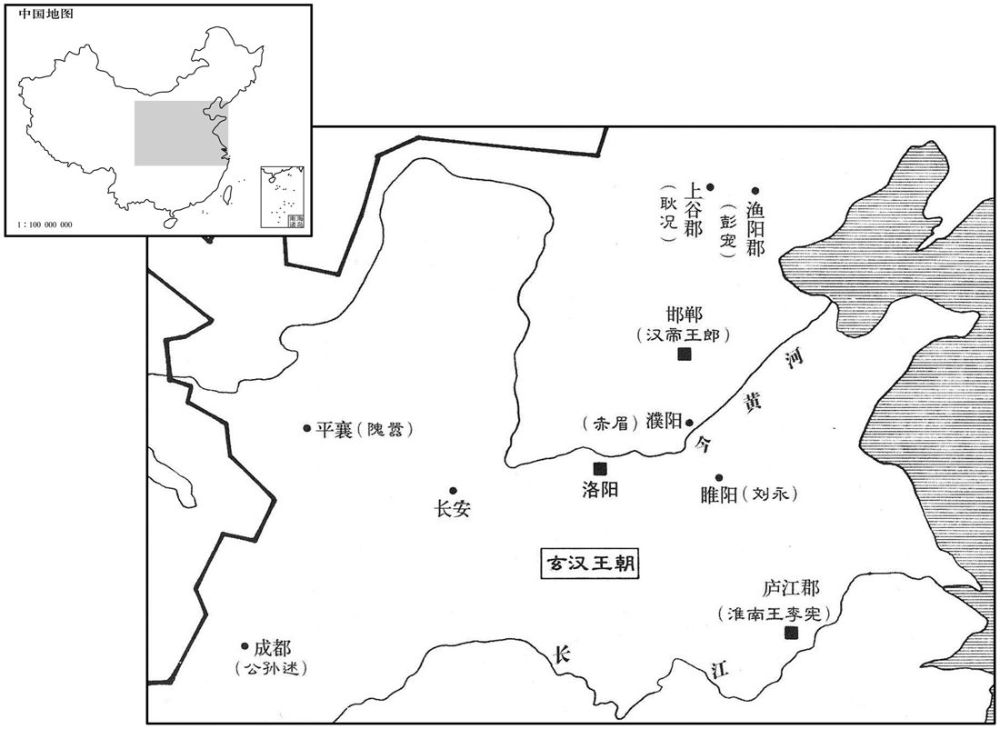
本年形势与背景参考图
舂陵戴侯曾孙玄在平林兵中，号更始将军。〔更，工衡翻。〕时汉兵已十余万，诸将议以兵多而无所统一，欲立刘氏以从人望。南阳豪桀及王常等皆欲立刘演；而新市、平林将帅乐放纵，〔乐，音洛。〕惮演威明，贪玄懦弱，先共定策立之，然后召演示其议。演曰：「诸将军幸欲尊立宗室，甚厚！然今赤眉起青、徐，众数十万，闻南阳立宗室，恐赤眉复有所立，〔其后赤眉果立盆子。复，扶又翻。〕王莽未灭而宗室相攻，是疑天下而自损权，〔言宗室争立，则天下莫知所从，是疑天下之心而自损其权也。〕非所以破莽也。舂陵去宛三百里耳，遽自尊立，为天下准的，使后人得承吾敝，非计之善者也。不如且称王以号令，王势亦足以斩诸将。若赤眉所立者贤，相率而往从之，必不夺吾爵位；若无所立，破莽，降赤眉，〔降，户江翻。〕然后举尊号，亦未晚也。」诸将多曰：「善！」张卬拔剑击地〔考异曰：司马彪续汉书「卬」作「印」，袁宏后汉纪作「斤」，皆误。今从范晔后汉书。〕曰：「疑事无功，〔战国策，肥义对赵武灵王之言。〕今日之议，不得有二！」众皆从之。二月，辛巳朔，设坛场于淯水上沙中，〔水经注：淯水出弘农卢氏�之蟟髐s，东南过南阳西鄂县西北，又东过宛县南；诸将立圣公于斯水之上。〕玄即皇帝位，南面立，朝群臣；〔朝，直遥翻。〕羞愧流汗，举手不能言。于是大赦，改元，以族父良为国三老，王匡为定国上公，王凤为成国上公，朱鲔为大司马，刘演为大司徒，陈牧为大司空，余皆九卿将军。〔匡、凤皆位上公而加定国、成国美号也。九卿将军，职为九卿，各带将军之号，仍王莽之制也。〕由是豪桀失望，多不服。〔豪桀欲立演而今立玄，故失望。〕
舂陵戴侯刘熊渠的曾孙刘玄，在平林兵中，称更始将军。这时汉兵已有十余万人，将领们议论，军队虽多，却没有共同的领袖。于是打算拥立一位汉朝的刘姓皇族，以便顺从大家的希望。南阳郡的豪杰与下江兵王常等，都主张立刘。而新市兵、平林兵的将领乐于放纵，害怕刘的威武严明，贪图刘玄的懦弱，抢先共同定下策略拥立刘玄，造成既成事实，然后召来刘告知决议。刘说：“各位将军要尊立刘姓皇族，对我们太厚爱了！然而现在赤眉在青州、徐州崛起，拥有数十万人，听到南阳拥立刘姓皇族的消息，恐怕他们也会拥立一位刘姓皇族。王莽还没有消灭，而刘姓皇族互相进攻，这将使天下疑心而损害自己的力量，不是消灭王莽的办法。而且，舂陵离宛城不过三百里，仓猝自称皇帝，成为天下攻击的目标，让后来人承受衰败，不是好的计谋。不如暂且称王以发号施令，国王的权力也足以斩杀将领。如果赤眉拥立的人贤能，我们就一起前去投奔归附他，绝不会剥夺我们的官爵的。如果赤眉没有立皇帝，那么，等我们消灭了王莽，收服了赤眉，然后再称皇帝，也不算晚。”将领们大都说：“好！”张却拔出宝剑，砍击地面，说：“对自己做的事情，抱着怀疑态度，一定不能成功。今天这项决定，不允许有第二种想法！”众人都赞成。二月辛巳朔（初一），在水畔沙滩中设置坛场，刘玄登极，面向南方站立，接受群臣朝拜。他感到羞愧，满脸流汗，只举手而说不出话来。于是宣布大赦，改变年号，任命堂叔刘良当国三老，王匡当定国上公，王凤当成国上公，朱鲔当大司马，刘当大司徒，陈牧当大司空，其他将领都当九卿将军。从此，英雄豪杰感到失望，多有不服。
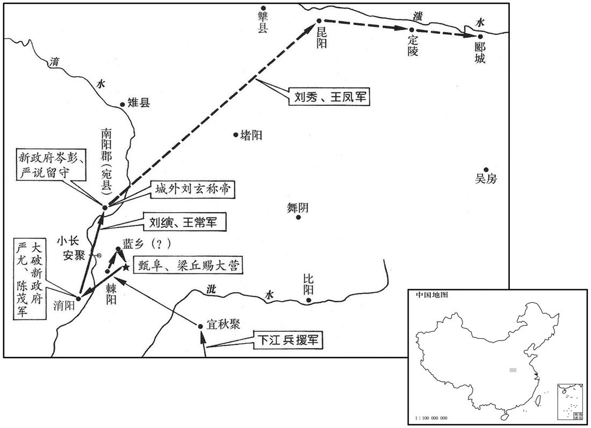
王莽欲外示自安，乃染其须发，立杜陵史谌女为皇后；〔谌，时壬翻。〕置后宫，位号视公、卿、大夫、元士者凡百二十人。〔三夫人视三公，九嫔视九卿，二十七世妇视二十七大夫，八十一御妻视八十一元士。〕
王莽想要显示自己的心情是安定的，于是染黑了胡子和头发，立杜陵人史谌的女儿作皇后。此外还设置后宫，遴选嫔妃一百二十人，地位封号分别比照公、卿、大夫、元士。
莽赦天下，诏：「王匡，哀章等讨青、徐盗贼，严尤、陈茂等讨前队丑虏，明告以生活、丹青之信；〔师古曰：生活，谓来降者不杀之也。丹青之信，言明着也。〕复迷惑不解散，〔复，扶又翻。〕将遣大司空、隆新公将百万之师劋绝之矣。」〔师古曰：劋，绝也，音子小翻。司空、隆新公，王邑。〕
王莽大赦天下，宣布诏命：“王匡、哀章等讨伐青州、徐州地区的盗贼，严尤、陈茂等讨伐前队地区的盗贼，明白地向他们宣告来降者不杀、守约不变；如果仍然迷惑而不解散，即将派遣大司空、隆新公王邑带领百万大军剿灭他们。”
三月，王凤与太常偏将军刘秀等徇昆阳、定陵、郾，皆下之。〔贤曰：昆阳、定陵、郾，皆县名，并属颍川郡。昆阳故城，在今许州叶县北二十五里。郾，今豫州郾城县也。定陵，在今郾城西北。郾，音于建翻。余按旧唐书，高宗咸亨二年冬，校猎于许州叶县昆水之阳。〕
三月，王凤和太常偏将军刘秀等率领汉军攻掠昆阳、定陵、郾等城，都予攻克。
王莽闻严尤、陈茂败，乃遣司空王邑驰传，〔传，知恋翻。〕与司徒王寻发兵平定山东；征诸明兵法六十三家以备军吏，以长人巨毋霸为垒尉，〔郑玄曰：军壁曰垒。贤曰：垒尉，主壁垒之事。〕又驱诸猛兽虎、豹、犀、象之属以助威武。邑至洛阳，州郡各选精兵，牧守自将，〔守，式又翻。将，即亮翻。〕定会者四十三〔【章：十二行本「三」作「二」；乙十一行本同；孔本同；退斋校同。】〕万人，号百万；余在道者，旌旗、辎重，千里不绝。〔贤曰：周礼曰：析羽为旌，熊虎为旗。辎，车名。释名曰：辎，厕也，谓军粮什物杂厕载之；以其累重，故称辎重。重，音直用翻。〕夏，五月，寻、邑南出颍川，与严尤、陈茂合。
王莽知道了严尤、陈茂失败，就派遣司空王邑乘坐传车急速出发，和司徒王寻一起发兵去平定崤山以东地区。同时征召通晓六十三家兵法的人为军官，任用巨人巨毋霸为垒尉，又赶来虎、豹、犀、象等猛兽以助军威。王邑到了洛阳，各州郡选派精锐的士兵，由州郡的长官亲自带领，定期会集起来的有四十三万人，号称百万；其余的正在路上走，旌旗、辎重千里不绝。夏季，五月，王寻、王邑离开颍川南下，同严尤、陈茂会合。
诸将见寻、邑兵盛，皆反走，入昆阳，惶怖，忧念妻孥，〔贤曰：孥，子也，音奴。〕欲散归诸城。刘秀曰：「今兵谷既少〔少，诗沼翻。〕而外寇强大，并力御之，功庶可立；如欲分散，势无俱全。且宛城未拔，〔贤曰：谓伯升围宛未拔也。〕不能相救；昆阳即拔，一日之间，诸部亦灭矣。今不同心胆，共举功名，反欲守妻子财物邪！」诸将怒曰：「刘将军何敢如是！」秀笑而起。会候骑还，言：「大兵且至城北，军陈数百里，不见其后。」〔陈，读曰阵。〕诸将素轻秀，及迫急，乃相谓曰：「更请刘将军计之。」秀复为图画成败，〔复，扶又翻。为，于伪翻。〕诸将皆曰：「诺。」时城中唯有八九千人，秀使王凤与廷尉大将军王常守昆阳，夜与五威将军李轶等十三骑〔贤曰：王莽置五威将军，其衣服依五方之色，以威天下。李轶初起，犹假以为号。余谓如太常偏将军、廷尉大将军之类，亦犹莽之纳言大将军、秩宗大将军，是即前所云九卿将军也。〕出城南门，于外收兵。
汉军的将领们看到王寻、王邑兵多势众，都往回跑，进入昆阳城，惊慌不安，担忧老婆孩子，想从这里分散而到其他城邑去。刘秀对他们说：“现在城内兵、粮既少，而城外敌军又强大，合力抵抗敌军，也许可以立功；如果分散，势必不能一一保全。况且刘部队还没有攻下宛城，不能前来救援；假如昆阳被敌军占领，只要一天的功夫，我军各部也就都完了。现在怎么能不同心胆，共举大业，反而想要守着妻子财物呢？”将领们发怒说：“刘将军怎么敢这样说！”刘秀笑而起身。正在此时，侦察的骑兵回来，报告说：“敌人大军即将来到城的北面，军阵达几百里，看不到它的尾巴。”将领们一向轻视刘秀，到了这样紧急的时候，才互相议论道：“再去请刘将军谋划这件事。”刘秀又给将领们描述成败因素，将领们都说：“是的。”这时城中只有八九千人，刘秀让王凤和廷尉大将军王常守卫昆阳，自己夜里同五威将军李轶等十三人骑马驰出昆阳城的南门，在外面收集士兵。
时莽兵到城下者且十万，秀等几不得出。〔几，居希翻。〕寻、邑纵兵围昆阳，严尤说邑曰：〔说，输芮翻。〕「昆阳城小而坚，今假号者在宛，〔假号者，谓更始也。〕亟进大兵，彼必奔走；宛败，昆阳自服。」邑曰：「吾昔围翟义，坐不生得〔翟义事见三十六卷王莽居摄二年。贤曰：坐，才卧翻。〕以见责让，今将百万之众，遇城而不能下，非所以示威也。当先屠此城，蹀血而进，〔师古曰：蹀，音大颊翻。蹀，谓履涉之也。〕前歌后舞，顾不快邪！」遂围之数十重，列营百数，钲鼓之声闻数十里，〔重，直龙翻。闻，音问。〕或为地道、冲輣撞城；〔贤曰：冲，橦车也；诗曰：临冲闲闲。许慎曰：輣，楼车也。輣，音步耕翻。撞，丈江翻。〕积弩乱发，矢下如雨，城中负户而汲。王凤等乞降，不许。〔降，户江翻。〕寻、邑自以为功在漏刻，不以军事为忧。严尤曰：「兵法：『围城为之阙』，〔师古曰：此兵法之言也。阙，不合也。孙子曰：围师必阙。曹操注云：司马法云：围其三面，阙其一面，所以示生路也。〕宜使得逸出以怖宛下。」〔怖，普布翻。〕邑又不听。
当时开到昆阳城下的王莽军将近十万，刘秀等人几乎不能出去。王寻、王邑纵兵包围昆阳，严尤向王邑献策说：“昆阳城小而坚固，现在假冒皇帝名号的刘玄在宛城，我们大军迅速向那里进兵，他必定奔逃；宛城方面的汉军一旦失败，昆阳城里的汉军自然向我军降服。”王邑说：“我以前围攻翟义，因没有活捉住他而受到责备，如今带领百万之众，遇城而不能攻下，这就不能显示军威了。应当先攻陷屠杀此城，踏着血泊前进，前歌后舞，难道不痛快吗？”于是把昆阳包围了几十重，列营上百个，钲鼓之声响彻几十里，还挖掘地道，用战车撞城；用许多弓弩向城内乱射，矢下如雨，城内的人为了躲避飞矢，背着门板出外打水。王凤等乞求投降，不被理睬。王寻、王邑自以为片刻就可成功，不担心军事上会出其它事故。严尤建议说：“《兵法》上写着：‘围城要留下缺口’，应让被围之敌得以逃出，从而使围攻宛城的绿林军害怕。”王邑又不听取这个建议。
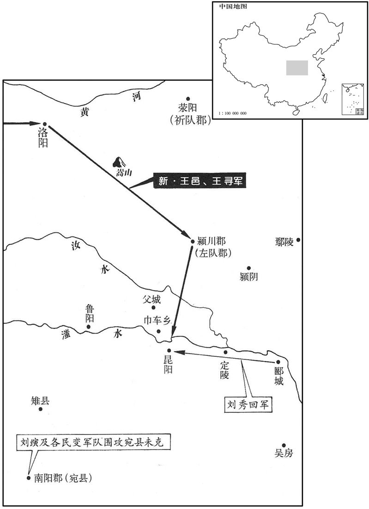
棘阳守长岑彭〔姓谱：岑，古岑子国之后。吕氏春秋：周文王封异母弟耀之子渠为岑子，其地梁国岑亭是也。彭，棘阳人，守本县长。长，知两翻。〕与前队贰严说〔贰，副也。莽使说为前队大夫甄阜之副也。〕共守宛城，汉兵攻之数月，城中人相食，乃举城降；更始入都之。诸将欲杀彭，刘演曰：「彭，郡之大吏，执心固守，是其节也。今举大事，当表义士，不如封之。」更始乃封彭为归德侯。〔贤曰：归德，县名，属北地郡。宋白曰：庆州华池县，本汉归德县地。又，通远军西北有归德川。〕
棘阳守长岑彭和前队副将严说同守宛城，汉军围攻了几个月，城中因为缺粮而人吃人，于是全城报降。更始皇帝进城，并在宛城建都。将领们打算杀掉岑彭，刘说：“岑彭是郡的大官，决心固守，是有气节的表现。现在我们办大事，应当表彰义士，不如封他。”更始帝就封岑彭为归德侯。
刘秀至郾、定陵，悉发诸营兵；诸将贪惜财物，欲分兵守之。秀曰：「今若破敌，珍宝万倍，大功可成；如为所败，〔败，补迈翻。〕首领无余，何财物之有！」乃悉发之。六月，己卯朔，秀与诸营俱进，自将步骑千余为前锋，去大军四五里而陈；〔陈，读曰阵。〕寻、邑亦遣兵数千合战，秀奔之，斩首数十级。〔贤曰：秦法：斩首一，赐爵一级；因谓斩首为级。〕诸将喜曰：「刘将军平生见小敌怯，今见大敌勇，甚可怪也！且复居前，请助将军！」秀复进，寻、邑兵却，诸部共乘之，斩首数百、千级。〔自数百级以至千级也。复，扶又翻。〕连胜，遂前，诸将胆气益壮，无不一当百，秀乃与敢死者三千人从城西水上冲其中坚。〔贤曰：敢死，谓果敢而死者。凡军事，中军将军至尊，以坚锐自辅，故曰中坚也。余谓敢死者，敢于致死者也。〕寻、邑易之，〔易，以豉翻。〕自将万余人行陈，〔师古曰：巡行军陈也。行，音下更翻。陈，读曰阵；下同。〕敕诸营皆按部毋得动，独迎与汉兵战，不利，大军不敢擅相救；寻、邑陈乱，汉兵乘锐崩之，遂杀王寻。城中亦鼓噪而出，中外合势，震呼动天地；〔呼，火故翻。〕莽兵大溃，走者相腾践，伏尸百余里。会大雷、风，屋瓦皆飞，雨下如注，滍川盛溢，〔水经曰：滍水出南阳鲁阳县西尧山，东南经昆阳城北，东入汝。滍，音直理翻。〕虎豹皆股战，士卒赴水溺死者以万数，〔贤曰：数过于万，故以万为数。〕水为不流。〔为，于伪翻。〕王邑、严尤、陈茂轻骑乘死人渡水逃去，尽获其军实辎重，不可胜算，〔重，直用翻。胜，音升。〕举之连月不尽，或燔烧其余。士卒奔走，各还其郡，王邑独与所将长安勇数千人还洛阳，关中闻之震恐。于是海内豪桀翕然响应，〔响应，若响之应声也。〕皆杀其牧守，自称将军，用汉年号以待诏命；旬月之间，于天下。
刘秀到了郾、定陵等地，调发各营的全部军队；将领们贪惜财物，想要分出一部分兵士留守。刘秀说：“现在如果打垮敌人，有万倍的珍宝，大功可成；如果被敌人打败，头都被杀掉了，还有什么财物！”于是征发了全部军队。六月己卯朔（初一），刘秀和各营部队一同出发，亲自带领步兵和骑兵一千多人为先头部队，在距离王莽大军四五里远的地方摆开阵势。王寻、王邑也派几千人来交战，刘秀带兵冲了过去，斩了几十人首级。将领们高兴地说：“刘将军平时看到弱小的敌军都胆怯，现在见到强敌反而英勇，太奇怪了！还是我们在前面吧，请让我们协助将军！”刘秀又向前进兵，王寻、王邑的部队退却；汉军各部一同冲杀过去，斩了数百上千个首级。汉军接连获胜，继续进兵，将领们胆气更壮，没有一个不是以一当百。刘秀就和敢于牺牲的三千人从城西水岸边攻击王莽军的主将营垒。王寻、王邑轻视汉军，亲自带领一万余人巡行军阵，戒令各营都按兵不动，单独迎上来同汉军交战，不利，大部队又不敢擅自相救；王寻、王邑所部阵乱，汉军乘机击溃敌军，终于杀了王寻。昆阳城中的汉军也击鼓大喊而冲杀出来，里应外合，呼声震天动地；王莽军大溃，逃跑者互相践踏，倒在地上的尸体遍布一百多里。适值迅雷、大风，屋瓦全都被风刮得乱飞，大雨好似从天上倒灌下来，水暴涨，虎豹都吓得发抖，掉入水中溺死的士兵上万，河水因此不能流动。王邑、严尤、陈茂等以轻骑踏着死人渡过水逃走。汉军获得王莽军抛下的全部军用物资，不可胜计，接连几个月都运不完，有些余下的就被烧掉。王莽军的士兵奔跑，各还故乡，只有王邑和他带领的长安勇士几千人回到洛阳，关中听到这个消息十分惊惧。于是海内豪杰一致响应，都杀掉当地的州郡长官，自称将军，用更始年号，等待更始皇帝的诏命；一个月之内，这种形势遍于天下。
莽闻汉兵言莽鸩杀孝平皇帝，乃会公卿于王路堂，开所为平帝请命金縢之策，〔事见三十六卷平帝元始六年。为，于伪翻。〕泣以示群臣。
王莽听说汉军说他用鸩酒毒杀了汉平帝，便集合公卿到王路堂，打开收藏在金柜中的他替平帝请求解除疾病、愿以身代死的策书，流着泪出示给群臣看。
刘秀复徇颍川，攻父城不下，〔贤曰：父城，县名，故城在今许州叶县东北。汝州郏城县亦有父城。复，扶又翻；下同。〕屯兵巾车乡。〔贤曰：巾车，乡名也，在父城界。〕颍川郡掾冯异监五县，〔掾，俞绢翻。监，古衔翻。〕为汉兵所获。异曰：「异有老母在父城，愿归，据五城以效功报德！」秀许之。异归，谓父城长苗萌曰：「诸将多暴横，〔长，知两翻。横，户孟翻。〕独刘将军所到不虏略，观其言语举止，非庸人也！」遂与萌率五县以降。〔降，户江翻。〕
刘秀再向颍川一带夺取土地，进攻父城，未能攻克，大军驻扎巾车乡。颍川郡掾冯异督察五县，被汉兵生擒。冯异说：“我有老母在父城，我愿意回去，献上这五座县城，以功来报答恩德。”刘秀许诺。冯异回去后，告诉父城县长苗萌说：“刘玄的将领们多数凶暴蛮横，只有刘秀将军所到的地方，不抢劫人和财物。看他的言谈举止，不是一个平庸之人。”于是和苗萌一起率领五县军民投降。
新市、平林诸将以刘演兄弟威名益盛，阴劝更始除之。秀谓演曰：「事欲不善。」〔言更始欲相图也。〕演笑曰：「常如是耳。」更始大会诸将，取演宝剑视之；悤衣御史申徒建随献玉玦；〔申徒，即申屠。贤曰：玦，决也，令早决断。〕更始不敢发。演舅樊宏谓演曰：「建得无有范增之意乎﹖」〔范增事见九卷高帝元年。〕演不应。李轶初与演兄弟善，后更谄事新贵；〔新贵，谓朱鲔等。〕秀戒演曰：「此人不可复信！」〔复，扶又翻。〕演不从。演部将刘稷，勇冠三军，〔冠，古玩翻。〕闻更始立，怒曰：「本起兵图大事者，伯升兄弟也。今更始何为者邪！」更始以稷为抗威将军，稷不肯拜；〔不肯拜受抗威之命也。〕更始乃与诸将陈兵数千人，先收稷，将诛之；演固争。李轶、朱鲔因劝更始并执演，即日杀之；以族兄光禄勋赐为大司徒。〔赐与更始同祖苍梧太守利。〕秀闻之，自父城驰诣宛谢。〔贤曰：以伯升见害，心不自安，故谢。〕司徒官属迎吊秀，〔演之官属也。〕秀不与交私语，〔远嫌也。〕惟深引过而已，〔引过以归己。〕未尝自伐昆阳之功；又不敢为演服丧，〔为，于伪翻。〕饮食言笑如平常。更始以是凓，拜秀为破虏大将军，封武信侯。
新市兵、平林兵的将领们因为刘兄弟威名日盛，秘密建议更始帝刘玄除掉他俩。刘秀对刘说：“看情况，更始帝打算跟我们过不去。”刘笑着说：“一向就是如此。”不久，刘玄集合全体将领，教刘拿出他的宝剑，接过来仔细观察。这时，绣衣御史申徒建跟着呈上玉，暗示更始帝早下决断，但更始不敢发动。刘的舅舅樊宏对刘说：“申徒建莫非有范增的意图？”刘不作回答。李轶最初跟刘兄弟感情很好，可是后来转而谄媚拥有权柄的新贵，刘秀告诫刘：“对这个人不能再信任了！”刘不听从。刘的部将刘稷，勇冠三军，听说刘玄即位的消息，大怒说：“当初起兵图谋大事的，是刘兄弟。而今更始是干什么的呢！”刘玄任命刘稷当抗威将军，刘稷不肯拜受这一任命。刘玄于是与将领们部署数千军队，先逮捕刘稷，准备诛杀。刘坚持反对。李轶、朱鲔趁机建议刘玄同时逮捕刘，并于当天跟刘稷一齐斩首。刘玄任命堂兄光禄勋刘赐当大司徒。刘秀听到这个消息，从父城夺回宛城，向刘玄请罪。司徒所属官员迎接刘秀，表示哀悼，刘秀不与他们谈一句私话，唯有深自责备而已，不曾自己夸耀保卫昆阳的战功，又不敢为刘服丧；饮食言谈欢笑跟平常一样。刘玄因此惭愧，任命刘秀当破虏大将军，封武信侯。
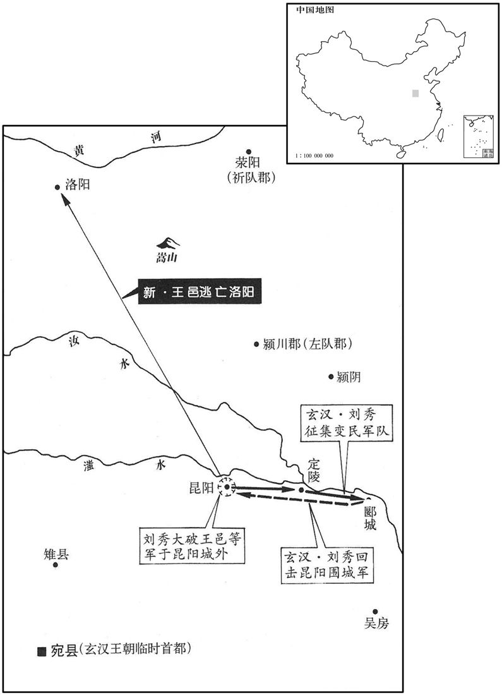
道士西门君惠谓王莽卫将军王涉曰：「谶文刘氏当复兴，〔复，扶又翻；下同。〕国师公姓名是也。」涉遂与国师公刘秀、大司马董忠、司中大赘孙伋谋，以所部兵劫莽降汉，以全宗族。〔涉欲全王氏之族也。降，户江翻。〕秋，七月，伋以其谋告莽，莽召忠诘责，因格杀之，使虎贲以斩马剑剉忠，收其宗族，以醇酰、毒药、白刃、丛棘并一坎而埋之；秀、涉皆自杀。莽以其骨肉、旧臣，恶其内溃，故隐其诛。〔师古曰：王涉，骨肉；刘歆，旧臣。余按莽传，涉，曲阳侯根子也。恶，乌路翻。〕莽以军师外破，大臣内畔，左右亡所信，〔古亡、无字通。〕不能复远念郡国，乃召王邑还，为大司马，以大长秋张邯为大司徒，崔发为大司空，司中寿容苗欣为国师。〔邯，下甘翻。欣，音欣。〕莽忧懑不能食，〔懑，音闷，又音满。〕但饮酒，啖鳆鱼；〔师古曰：此鳆，海鱼也，音雹。郭璞注三苍曰：鳆，似蛤，偏着石。广志：曰：鳆，无鳞，有壳，一面附石，细孔杂杂，或七或九。本草曰：石决明，一名鳆鱼。〕读军书倦，因冯几寐，〔师古曰：冯，读曰凭。〕不复就枕矣。
道士西门君惠对王莽的卫将军王涉说：“谶文说刘姓应当复兴，国师公的姓名就是。”王涉于是与国师公刘秀、大司马董忠、司中大赘孙商量，准备用所属的部队劫持王莽，投降更始政权，以保全自己的家族。秋季，七月，孙向王莽告密。王莽召见董忠责问，趁机当场格杀，命虎贲武士用斩马剑剁董忠的尸体，逮捕董忠的家族，用浓醋、毒药、利刀、荆棘合成一穴埋葬了他们。刘秀和王涉都自杀了。王莽因为这两个人是至亲和老部下，嫌厌人家说他的内部崩溃了，所以不公开宣布对他们的惩罚。王莽因为军队在外面打了败仗，大臣们又在内部叛变，身边没有人可信任了，不能够再考虑远方的郡国，于是召王邑回来，任命为大司马。同时，任命大长秋张邯担任大司徒，崔发担任大司空，司中寿容苗担任国师。王莽忧闷得吃不下饭了，只喝酒，吃鳆鱼。阅读军书疲倦了，便靠着几案打盹儿，不再上床睡觉了。
成纪隗崔、隗义、〔成纪县，属天水郡。贤曰：故城在今秦州陇城县西北。隗姓，出于赤狄。〕上邽杨广、冀人周宗〔上邽县，属陇西郡。贤曰：故邽戎邑，今秦州县。冀县，属天水郡；秦武公伐冀戎，因县之。宋白曰：秦州治陇城县，即故冀城。〕同起兵以应汉，〔【章：十二行本「汉」下有「众数千人」四字；乙十一行本同；孔本同；张校同。】〕攻平襄，杀莽镇戎大尹李育。〔贤曰：平襄，县名，属天水郡，故城在今秦州伏羌县西北：王莽改天水郡曰镇戎。〕崔兄子嚣，素有名，好经书，〔好，呼到翻。〕崔等共推为上将军；崔为白虎将军，义为左将军。〔崔本自署右将军；白虎居右，又起兵于西方，白虎主之，因改右将军号白虎将军。〕嚣遣使聘平陵方望，以为军师。〔贤曰：平陵，昭帝陵，因以为县；故城在今咸阳县西北。武王伐纣，以太公为师尚父；田单守即墨，以一卒为神师；韩信既破赵，师事李左车；皆军师也。后遂以为官称。〕望说嚣立高庙于邑东；〔平襄邑之东也。说，输芮翻。〕己巳，祠高祖、太宗、世宗，嚣等皆称臣执事，杀马同盟，以兴辅刘宗；移檄郡国，数莽罪恶。〔数，所具翻。〕勒兵十万，击杀雍州牧陈庆、安定大尹王向。〔莽改汉凉州曰雍州。向，平阿侯王谭之子也。考异曰：王莽传作「卒正王旬」，袁纪作「太守王向」，今从范书。〕分遣诸将徇陇西、武都、金城、武威、张掖、酒泉、敦煌，〔敦，徒门翻。〕皆下之。
成纪人隗崔和隗义、上人杨广、冀人周宗同时聚众起兵，响应刘玄的汉军。他们进攻平襄，击杀王莽镇戎大尹李育。隗崔哥哥的儿子隗嚣一向有很好名声，喜爱儒家经典，隗崔等共同推举隗嚣当上将军，隗崔当白虎将军，隗义当左将军。隗嚣派遣使者聘请平陵人方望担任军师。方望建议隗嚣，在平襄东郊兴建汉高祖刘邦祭庙。己巳（二十二日），祭祀汉高祖、太宗、世宗，隗嚣等都称臣执事，杀马盟誓，同心合力辅佐刘姓皇族。向各郡、各封国传递文告，声讨王莽罪行。统率军队十万，击杀雍州牧陈庆、安定大尹王向。然后，分别派出将领，攻打陇西、武都、金城、武威、张掖、酒泉、敦煌，全部攻克。
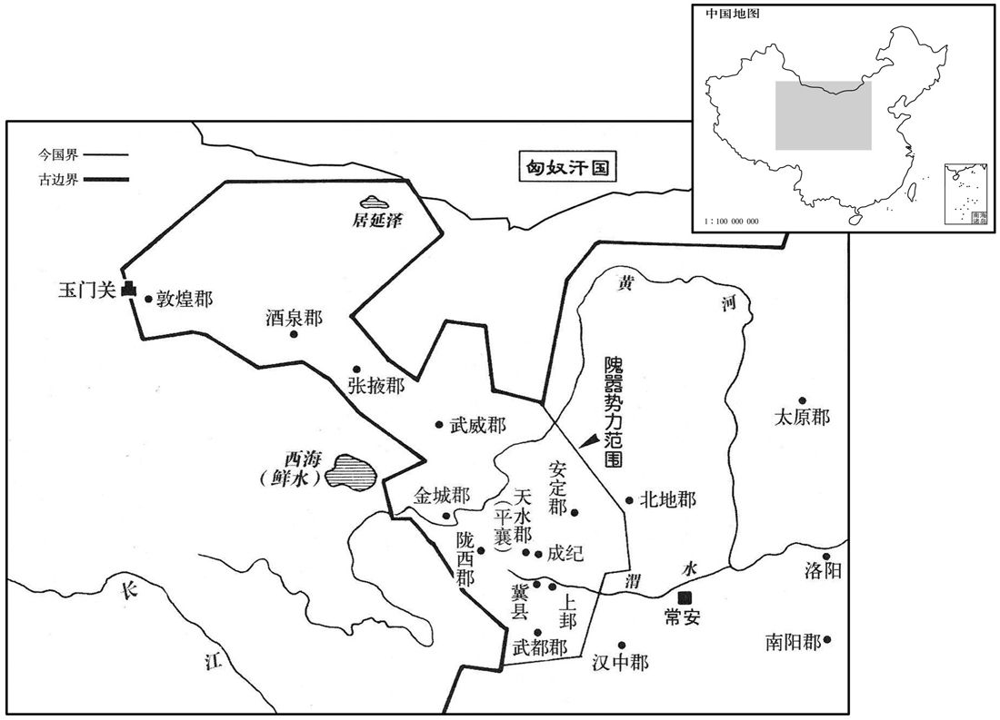
初，茂陵公孙述为清水长，〔贤曰：清水，县名，属天水郡；今秦州县。〕有能名；迁导江卒正，治临邛。〔贤曰：王莽改蜀郡曰导江。临邛，今邛州县。班志，临邛县属蜀郡。邛，音渠容翻。〕汉兵起，南阳宗成、商人王岑起兵徇汉中以应汉，〔宗成，南阳人也。地理志，商县，属弘农郡。贤曰：今商州商雒县也。〕杀王莽庸部牧宋遵，众合数万人。述遣使迎成等，成等至成都，〔地理志，成都县，属蜀郡。〕虏掠暴横。〔横，户孟翻。〕述召郡中豪桀谓曰：「天下同苦新室，思刘氏久矣，故闻汉将军到，驰迎道路。今百姓无辜而妇子系获，此寇贼，非义兵也。」乃使人诈称汉使者，假述辅汉将军、蜀郡太守兼益州牧印绶；选精兵西击成等，杀之，〔按临邛在成都西南。述兵自临邛迎击宗成等，非西向也。此承范史之误。〕并其众。
最初，茂陵公孙述当清水县长，以才能干练闻名于世。后调升导江郡卒正，郡府设于临邛。汉兵崛起时，南阳人宗成、商县人王岑也起兵响应，夺取汉中，杀死王莽庸部牧宋遵，集结数万人。公孙述派人迎接宗成等。宗成等到成都，劫夺抢掠，残暴蛮横。公孙述召集郡中豪杰，对他们说：“天下人不堪新朝的迫害，怀念汉朝很久了，所以听说汉朝的将军来到，奔走相告，到道路上迎接。而今人民无罪，妻子儿女却受到凌辱，这些人是强盗，而不是义军。”于是，派人假冒更始政权的使者，授予公孙述辅汉将军、蜀郡太守兼益州牧的印信。公孙述选派精兵西击宗成等，把他们杀死，兼并了他们的部队。
前锺武侯刘望起兵汝南，〔按王子侯表：锺武节侯度，长沙定王之孙，成帝元延二年，侯则绍封；其后不见。或者望其则之子欤﹖锺武在义阳郡界。水经注：师水过义阳郡城，东径锺武故城南。考异曰：王莽传作「刘圣」，今从范书刘玄传。〕严尤、陈茂往归之；八月，望即皇帝位，以尤为大司马，茂为丞相。
前汉朝钟武侯刘望在汝南起兵，严尤、陈茂前往归附。八月，刘望登极，任命严尤当大司马，陈茂当丞相。
王莽使太师王匡、国将哀章守洛阳。〔将，即亮翻。考异曰：袁纪作「蔵章」，今从范书。〕更始遣定国上公王匡攻洛阳，西屏大将军申屠建、丞相司直李松攻武关，〔李松，通之从弟。屏，必郢翻。〕三辅震动。析人邓晔、于匡起兵南乡以应汉，〔师古曰：析，南阳之县。南乡，析县之乡名也。宋白曰：邓州内乡县，古之析邑。析，音先历翻。〕攻武关都尉朱萌，萌降；〔降，户江翻。〕进攻右队大夫宋纲，杀之；〔莽改弘农郡曰右队。〕西拔湖。〔师古曰：湖，弘农之县也，本属京兆。〕莽愈忧，不知所出。崔发言：「古者国有大灾，则哭以厌之。〔师古曰：周礼春官之属女巫之职曰：凡邦之大灾，歌哭以请。哭者，所以告哀也。春秋左氏传：宣十二年，楚子围郑，旬有七日，郑人大临，守陴者皆哭。故发引之以为言也。厌，音一叶翻。〕宜告天以求救！」莽乃率群臣至南郊，陈其符命本末，仰天大哭，气尽，伏而叩头。诸生小民旦夕会哭，为设餐粥；〔为，于伪翻。师古曰：餐，音千安翻。〕甚悲哀者，除以为郎，郎至五千余人。
王莽命太师王匡、国将哀章守卫洛阳，更始皇帝派遣定国上公王匡进攻洛阳，西屏大将军申屠建、丞相司直李松进攻武关，三辅地区为之震动。析县人邓晔和于匡在南乡起兵以响应汉军，进攻武关都尉朱萌，朱萌投降；进攻右队大夫宋纲，把宋纲杀掉；向西挺进，攻陷湖县。王莽更加忧虑，不知所措。崔发说：“古时候国家有了大灾难，就用哭向上天告哀来战胜它。应该祷告上天祈求救助。”王莽于是率领群臣到南郊，陈述他承受符命的首尾经过，仰天大哭，声嘶气绝，伏地叩头。众儒生和老百姓每天早晚会集起来哭，给他们准备了稀饭。哭得非常悲哀的人，被任命作郎官，郎官达到五千多人。
莽拜将军九人，皆以虎为号，将北军精兵数万人以东，内其妻子宫中以为质。〔质，音致。〕时省中黄金尚六十余万斤，他财物称是，〔称，尺证翻。〕莽愈爱之，赐九虎士人四千钱；众重怨，无意。〔师古曰：重，音直用翻。〕九虎至华阴回溪，〔贤曰：回溪，今俗所谓回坑，在洛州永宁县东北；其溪长四里，阔二丈，深二丈五尺。华，户化翻。〕距隘自守。于匡、邓晔击之，六虎败走；二虎诣阙归死，莽使使责死者安在，皆自杀；其四虎亡。〔二虎自杀者，史熊、王况也。四虎亡者，史逸其名。〕三虎收散卒保渭口京师仓。〔三虎，郭钦、陈翚、成重也。师古曰：京师仓，在华阴灌北渭口也。〕
王莽任命将军九人，都用“虎”作为将军的名号，率领禁卫军精锐士兵几万人向东方开去，把他们的妻子儿女收容到皇宫里作为人质。这时宫中储存的黄金还有六十多万斤，其他的贵重珍宝差不多也是这个数目，王莽更加爱不释手，对九虎将军部属，每人仅赏赐四千钱。大家很怨恨，毫无斗志。九虎将军到达华阴县回，扼守险要。于匡、邓晔率军攻击他们，六位虎将军战败逃走，其中两位虎将军回到朝廷接受死刑处分，王莽让使者责问他们死的人在哪里，于是二人自杀，其他四位虎将军逃亡。还有三位虎将军收集散兵，保卫渭口京师仓。
邓晔开武关迎汉兵。李松将三千余人至湖，与晔等共攻京师仓，未下。晔以弘农掾王宪为校尉，〔掾，俞绢翻。〕将数百人北渡渭，入左冯翊界。李松遣偏将军韩臣等径西至新丰击〔【章：十二行本「击」下有「破」字；乙十一行本同；孔本同；张校同；退斋校同。】〕莽波水将军，〔据窦融传，莽拜融为波水将军。前书音义曰：波水，在长安南。〕追奔至长门宫。王宪北至频阳，所过迎降。〔师古曰：所过之处，人皆来迎而降附也。〕诸县大姓各起兵称汉将军，〔【章：十二行本无「军」字；乙十一行本同；孔本同。】〕率众随宪。李松、邓晔引军至华阴，而长安旁兵四会城下；又闻天水隗氏方到，皆争欲〔【章：十二行本「欲」下有「先」字；乙十一行本同；孔本同；张校同。】〕入城，贪立大功、卤掠之利。〔言入城诛莽，既立大功，又得卤掠，贪二者之利也。〕莽赦城中囚徒，皆授兵，杀豨，饮其血，与誓曰：「有不为新室者，社鬼记之！」〔豨，许岂翻，又音希。为，于伪翻。〕使更始将军史谌将之。〔谌，氏壬翻。〕渡渭桥，皆散走；谌空还。众兵发掘莽妻、子、父、祖冢，烧其棺及九庙、明堂、辟雍，火照城中。
邓晔打开武关关门，迎接汉兵。李松率三千人抵达湖县，与邓晔等会合，共同进攻京师仓，没有攻下。邓晔任命弘农掾王宪当校尉，率领数百人北渡渭河，进入左冯翊境内。李松派遣偏将军韩臣等，一直向西推进到新丰，攻击王莽波水将军窦融。窦融败退，韩臣追击，直抵长门宫。王宪部队推进到频阳，沿途地方官府都迎而降服。各县大姓分别起兵，自称是汉朝将军，率领部众追随王宪。李松、邓晔率军抵达华阴时，长安附近的部队已从四方汇集到城下。大家听说天水隗家军也将抵达，都争着要第一个入城，贪图建立大功和抢劫财宝。王莽赦免城里监狱的犯人，都发给武器，杀猪饮血，跟他们立誓说：“如有不为新朝效力的人，社鬼记住他！”让更始将军史谌率领着他们。这些人渡过渭桥，都四散逃跑了，只剩史谌一个人回来。各路士兵挖掘王莽的妻子、儿子、父亲、祖父的坟墓，焚烧他们的棺材以及九庙、明堂和辟雍，火光映照城中。
九月，戊申朔，兵从宣平城门入。〔师古曰：长安城东出北头第一门。〕张邯逢兵见杀；王邑、王林、王巡、蹛恽等分将兵距击北阙下，〔蹛，师古曰：音带，又音徒盖翻。蹛姓，恽名。恽，于粉翻。〕会日暮，官府、邸第尽奔亡。己酉，城中少年朱弟、张鱼等恐见卤掠，趋讙并和，〔师古曰：众群行讙而自相和也。讙，许元翻。和，音乎卧翻。〕烧作室门，〔程大昌曰：作室者，未央宫西北织室、暴室之类，黄图谓为尚方工作之所者也。作室门，则工徒出入之门，盖未央宫之便门也。〕斧敬法闼，〔师古曰：敬法，殿名也。闼，小门也。谓斧斫之也。〕呼曰：「反虏王莽，何不出降！」〔师古曰：呼，音火故翻。〕火及掖庭、承明，黄皇室主所居。黄皇室主曰：「何面目以见汉家！」自投火中而死。
九月戊申朔（初一），攻城军队从宣平门入城。张邯遇到士兵，被杀。王邑、王林、王巡和恽等人分别带兵在北阙下抗击。恰好天黑，官府和豪门大宅的人全都逃跑了。己酉（初二），城里青年朱弟和张鱼等人恐怕遭抢劫，奔跑喧晔，聚集成群，焚烧尚方工场门，用斧子劈开敬法殿的小门，喊道：“反贼王莽，怎么不出来投降？”大火蔓延到掖庭、承明殿，这里是黄皇室主居住的地方。黄皇室主说：“我还有什么脸面再见汉朝人？”自己纵身投入火中而死。
莽避火宣室前殿，火辄随之。莽绀袀服，〔师古曰：绀，深青而扬赤色也。袀，纯也，纯为绀服也。袀，音均，又音弋旬翻。〕持虞帝匕首；〔虞帝安得有匕首，盖莽自为之以愚夫人。〕天文郎按式于前，〔师古曰：式，所以占时日。天文郎，今之用式者也。〕莽旋席随斗柄而坐，曰：「天生德于予，汉兵其如予何！」〔莽引孔子之言以自况。〕庚戌，且明，群臣扶掖莽自前殿之渐台，〔【章：十二行本「台」下有「欲阻池水」四字；乙十一行本同；孔本同；张校同；退斋校同。】〕此未央宫之渐台也。水经：未央渐台在沧池中。建章渐台在太液池中。程大昌曰：渐者，渍也，言台在水中受其渐渍也。凡台之环浸于水者，皆可名为渐台。渐，子廉翻。〕公卿从官尚千余人随之。〔从，才用翻。〕王邑昼夜战，罢极，〔师古曰：罢，读曰疲。〕士死伤略尽；驰入宫，间关至渐台，〔师古曰：间关，犹言崎呕，展转也。〕见其子侍中睦解衣冠欲逃，邑叱之，令还，父子共守莽。军人入殿中，闻莽在渐台，众共围之数百重。〔重，直龙翻。〕台上犹与相射，〔射，而亦翻。〕矢尽，短兵接，王邑父子、蹛恽、王巡战死，莽入室。下餔时，众兵上台，〔晡后，谓之下晡。按前书天文志：旦至食时，食时至日昳，日昳至晡，晡至下晡，下晡至日入。〕苗欣、唐尊、王盛等皆死。〔欣，音欣。〕商人杜吴杀莽，校尉东海公宾就斩莽首；〔师古曰：公宾姓，就名也。风俗通曰：鲁大夫公宾庚之后。王莽五十一居摄，五十四即真，六十八诛死。〕军人分莽身，节解脔分，争相杀者数十人；公宾就持莽首诣王宪。宪自称汉大将军，城�之L数十万皆属焉；舍东宫，〔师古曰：舍，止宿也。〕妻莽后宫，乘其车服。癸丑，李松、邓晔入长安，将军赵萌、申屠建亦至；以王宪得玺绶不上，〔玺，斯氏翻。绶，音受。上，时掌翻。〕多挟宫女，建天子鼓旗，收斩之。传莽首诣宛，县于市；百姓共提击之，〔县，读曰悬。提，音徒计翻。〕或切食其舌。
两版字句有差异，建议核对原文。
王莽避火到了未央宫宣室前殿，火总是跟着他。王莽穿着全套天青色的衣服，拿着虞帝匕首。天文郎在前面按着占测时日的，王莽转动坐席随着斗柄所指的方向坐着，说道：“上天把这样的品德赋予我，汉军能把我怎么样？”庚戌（初三），天快亮了，群臣搀扶着王莽，从前殿去渐台，公卿等随从官吏还有一千多人跟着他。王邑白天黑夜都在战斗，疲倦极了，士兵死伤快完了，他飞马进入宫中，辗转来到了渐台，看见他的儿子侍中王睦脱下衣帽想要逃走，王邑喝住他，让他转回，父子俩一同守卫着王莽。兵士进入殿中，听说王莽在渐台，众人将其包围了数百重。台上仍用弓箭与包围的士兵对射，箭用尽了，便短兵相接。王邑父子、恽、王巡战斗而死，王莽躲进内室。下午五时三刻，大批士兵上了渐台，苗、唐尊、王盛等人都死在台上。商县人杜吴杀死了王莽，校尉东海人公宾就砍下了王莽的脑袋。兵士们分裂了王莽的身躯，四肢关节、肌肉被切割成许多块，争着去砍杀的有几十人。公宾就拿着王莽的脑袋前往王宪那里。王宪自称汉朝的大将军，城里的军队几十万人都归属了他。王宪住在长乐宫，把王莽的妃嫔都作为妻妾，使用王莽的车马、衣服和器物。癸丑（初六），李松、邓晔进入长安，将军赵萌和申屠建也来到。因为王宪缴获了御玺没有上交，私藏了许多宫女，使用了天子的仪仗，便把他捉来杀掉了。传送王莽的脑袋前往宛城，挂在街市示众，百姓都去掷击它，有人切下他的舌头来吃了。
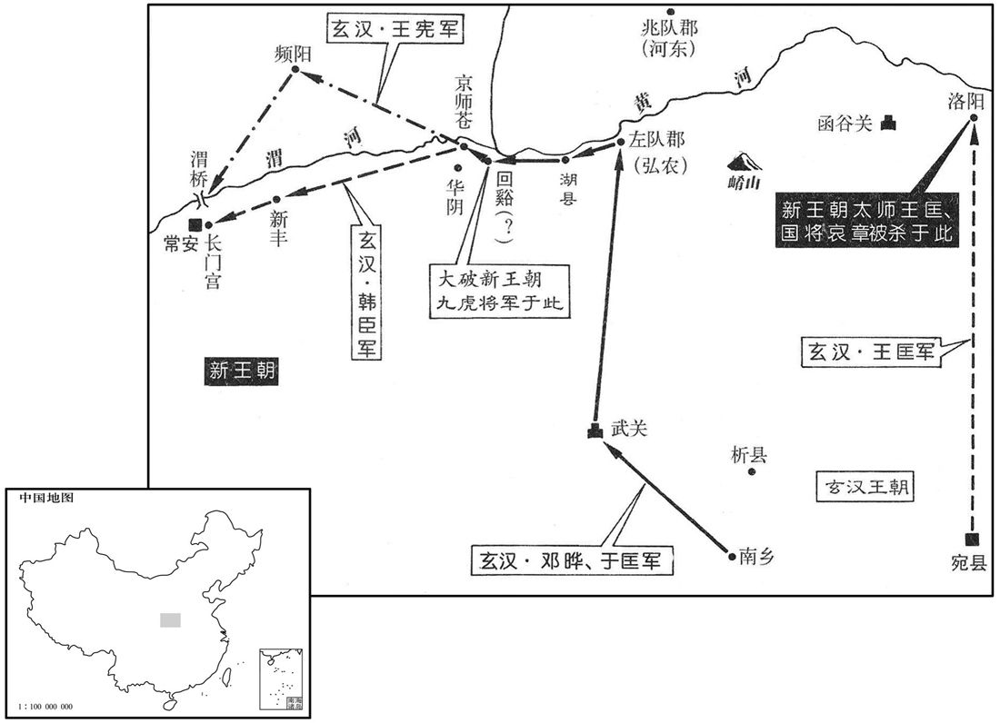
班固赞曰：王莽始起外戚，折节力行以要名誉，〔折，而设翻。要，一遥翻。〕及居位辅政，勤劳国家，直道而行，岂所谓『色取仁而行违』者邪！〔师古曰：论语载孔子答子张之言也。不仁之人假仁者之色，而行则违之。行，下孟翻。〕莽既不仁而有佞邪之材，又乘四父历世之权，〔四父，谓王凤、王音、王商、王根相继秉政，皆莽诸父也。〕遭汉中微，国统三绝，〔成、哀、平皆绝。〕而太后寿考，为之宗主，故得肆其奸慝以成篡盗之祸。推是言之，亦天时，非人力之致矣！及其窃位南面，颠覆之势险于桀、纣，而莽晏然自以黄、虞复出也，〔黄帝、虞舜，莽祖之。复，扶又翻。〕乃始恣睢，奋其威诈，〔师古曰：睢，音呼季翻。〕毒流诸夏，乱延蛮貉，犹未足以逞其欲焉。是以四海之内，嚣然丧其乐生之心，〔师古曰：嚣然，众口愁貌也，音五高翻。丧，息浪翻。〕中外愤怨，远近俱发，城池不守，支体分裂，遂令天下城邑为虚，〔虚，读曰墟。〕害生民，自书传所载乱臣贼子，考其祸败，未有如莽之甚者也！昔秦燔诗、书以立私议，莽诵六艺以文奸言，〔师古曰：以六经之事文饰奸言。〕同归殊涂，俱用灭亡，皆圣王之驱除云尔。〔苏林曰：圣王，光武也，为光武驱除也。师古曰：言驱逐蠲除以待圣人也。〕
班固赞曰：王莽最初以外戚起家，降低身份，勉力而行，以博取名誉。等到他登上高位，辅佐朝政，为国家辛勤工作，本着正直的原则行事。难道他就是孔子所说的“表面上仁义，行动中却违背它”的人吗？王莽本来没有仁义的品德，却有奸佞邪恶的才能，又利用四个伯父、叔父经历了元帝、成帝两代所掌握的权力，遇到汉朝中途衰落，皇位三代没有继承人，而皇太后王政君寿命很长，为他作主，因此得以施逞奸诈邪恶的手段，从而造成篡夺政权，窃取皇位的灾祸。根据这些事实推论起来，这也是天命，不是人力所能作得到的！等到窃取了皇帝的宝座，败亡的趋势比夏桀、商纣的时候还要危险，而王莽却安然地认为自己就是黄帝、虞舜再世复出。于是开始放纵暴戾，滥施威力诈术，流毒全国，灾祸蔓延到外族，还不足以满足他的欲望。因此天下陷于忧愁，人民丧失了乐生的心意，朝廷和地方都怨愤，远近同时反叛，城池失守，躯体分裂，终于使得全国的城市变成废墟，害尽了百姓。根据书籍传述上所记载的乱臣贼子以来，考察他们引起的苦难，与失败的凄惨，从没有一个超过王莽。从前秦朝焚毁《诗经》、《书经》等典籍从而确立自己的一家主张，王莽引用《六经》来装饰谬论，他们走的路不同，而目的完全一样，都由此而导致灭亡，全是为圣明的帝王开道铺路罢了！
定国上公王匡拔洛阳，生缚莽太师王匡、哀章，皆斩之。冬，十月，奋威大将军刘信击杀刘望于汝南，〔信，大司徒赐兄显之子。〕并诛严尤、陈茂，郡县皆降。〔降，户江翻。〕
定国上公王匡攻陷洛阳，生擒新莽太师王匡、国将哀章，将他们全都斩首。冬季，十月，奋威大将军刘信在汝南击杀刘望，并诛杀严尤、陈茂。所属郡县全都降服。
更始将都洛阳，以刘秀行司隶校尉，使前整修宫府。〔司隶校尉察三辅、三河、弘农，故使整修宫府。〕秀乃置僚属，作文移，〔东观记曰：文书移与属县也。〕从事司察，一如旧章。〔续汉书：司隶置从事史十二人，秩皆百石，主督促文书，察举非法。〕时三辅吏士东迎更始，见诸将过，皆冠帻而服妇人衣，〔汉官仪曰：帻者，古之卑贱不冠者之所服也。方言曰：覆髻谓之帻，或谓之承露。刘昭志曰：秦雄诸侯，乃加武将首饰，为绛袙以表贵贱；其后稍作颜题。汉兴，续其颜，却摞之，施巾，连题却覆之，名之曰帻。帻者，赜也，头首严赜也。至孝文，乃高颜题，崇其巾，为屋，合后，施收上下；群臣贵贱皆服之，文者长耳，武者短耳。〕莫不笑之；及见司隶僚属，皆欢喜不自胜，〔胜，音升。〕老吏或垂涕曰：「不图今日复见汉官威仪！」〔复，扶又翻；下同。〕由是识者皆属心焉。〔皆属，音之欲翻。〕
刘玄将要建都洛阳，任命刘秀代理司隶校尉，派他先到洛阳修建宫殿官府。刘秀于是设置下属官吏，用正式公文通知地方官府，处理政事完全按照西汉旧制。当时三辅的官员们派代表到洛阳迎接更始刘玄，看见将领们经过，都用布包头，穿着女人的衣裳，没有不耻笑的。等到看见司隶校尉的下属官员，都高兴得不能自制，有些年纪大的官员流泪说：“想不到今天重新看到了汉朝官员威武的仪表！”从此，有见识的人都归心刘秀。
更始北都洛阳，分遣使者徇郡国，曰：「先降者复爵位！」〔降，户江翻；下同。〕使者至上谷，〔汉上谷郡，治沮阳。〕上谷太守扶风耿况迎，上印绶；〔上，时掌翻。〕使者纳之，一宿，无还意。功曹寇恂勒兵入见使者，请之，〔姓谱：苏忿生为周武王司寇，其后以官为寇氏。百官志：郡功曹，主选署功劳，在诸曹之上。〕使者不与，曰：「天王使者，功曹欲胁之邪！」恂曰：「非敢胁使君，窃伤计之不详也。今天下初定，使君建节衔命，郡国莫不延颈倾耳；今始至上谷而先堕大信，〔贤曰：堕，毁也，读曰隳。〕将复何以号令他郡乎！」使者不应。恂叱左右以使者命召况；况至，恂进取印绶带况。使者不得已，乃承制诏之，况受而归。
刘玄北上定都洛阳，分别派出使节到各郡各封国巡行，宣布：“先投降的，恢复他的封爵和官位。”使节到了上谷，上谷太守扶凤人耿况迎接，缴纳印信，使节接受。可是，过了一夜，并无发还的意思。郡功曹寇恂率兵拜访使节，请求发还印信。使节不给，说：“我是皇帝的使臣，你打算威胁吗？”寇恂说：“我并不敢威胁阁下，只是替你的思虑不够周密而感到惋惜。而今天下刚刚安定，阁下代表皇帝驾临，各郡各封国没有不伸长脖子洗耳恭听的。可是现在才到上谷，便先自毁信誉，还有什么方法再对别的郡国发号施令？”使节不作答复。寇恂大声呵斥左右随从，教他们用使节名义召唤耿况。等到耿况来到，寇恂自己把印信交给耿况。使节无可奈何，只好用皇帝名义下诏，耿况受命后告辞。
宛人彭宠、吴汉亡命在渔阳，乡人韩鸿为更始使，徇北州，承制拜宠偏将军，行渔阳太守事，〔为彭宠据渔阳张本。〕以汉为安乐令。〔贤曰：安乐，县名，属渔阳郡；故城在今幽州潞县西北。乐，音洛。〕
宛城人彭宠、吴汉逃亡到渔阳。同乡韩鸿，担任更始政府使节，前往北方州郡巡行，用皇帝名义下诏，任命彭宠当偏将军，代理渔阳太守，任命吴汉当安乐县令。
更始遣使降赤眉。〔遣使者招谕之，使降而释兵也；后以意推。降，户江翻。〕樊崇等闻汉室复兴，即留其兵，将〔【章：十二行本「将」上有「自」字；孔本同；张校同。】〕渠帅二十余人随使者至洛阳，〔帅，所类翻。〕更始皆封为列侯。崇等既未有国邑，而留众稍有离叛者，乃复亡归其营。〔崇等时营在濮阳。为赤眉攻更始张本。〕
更始皇帝刘玄派人说降赤眉。樊崇等听说汉朝复兴，便留下部众，率将领二十余人，随同使节来到洛阳。刘玄把他们都封为列侯。可是，樊崇等既没有采邑，而留在原地的部众又逐渐有背叛离去的，于是又逃回他的营地。
故梁王立之子永诣洛阳；〔立死见三十六卷平帝元始四年。〕更始封为梁王，都睢阳。〔为永据梁、连群盗张本。睢，音虽。〕
前汉朝梁王刘立的儿子刘永到洛阳朝见刘玄，刘玄封刘永为梁王，首府设在睢阳。
更始欲令亲近大将徇河北，大司徒赐言：「诸家子独有文叔可用。」〔诸家子，谓南阳诸宗子也。光武讳秀，字文叔。〕朱鲔等以为不可，更始狐疑，赐深劝之；更始乃以刘秀行大司马事，持节北渡河，镇慰州郡。〔为光武自河北定天下张本。〕
刘玄打算派亲信大将巡行河北，大司徒刘赐说：“南阳刘姓宗族子弟中，只有刘秀可以胜任。”朱鲔等认为不可以，刘玄疑惑不决。刘赐恳切规劝他，刘玄才任命刘秀代理大司马，持节北渡黄河，镇抚慰问各州郡。
以大司徒赐为丞相，令先入关修宗庙、宫室。〔将都长安也。〕
刘玄赐封大司徒刘赐当丞相，命令他先进入函谷关内，修建宗庙、宫室。
南阳邓禹杖策追秀，及于邺。秀曰：「我得专封拜，生远来，宁欲仕乎﹖」禹曰：「不愿也。」秀曰：「即如是，何欲为﹖」禹曰：「但愿明公威德加于四海，禹得效其尺寸，垂功名于竹帛耳！」〔汉初未有纸，以竹简及缣素书，故言竹帛。〕秀笑，因留宿间语；〔贤曰：间，私也。〕禹进说曰：〔说，输芮翻；下同。〕「今山东未安，赤眉、青犊之属动以万数。更始既是常才而不自听断，〔断，丁乱翻。〕诸将皆庸人屈起，〔贤曰：屈，音求勿翻。〕志在财币，争用威力，朝夕自快而已，非有忠良明智、深虑远图，欲尊主安民者也。历观往古圣人之兴，二科而已，天时与人事也。今以天时观之，更始既立而灾变方兴；以人事观之，帝王大业非凡夫所任，〔任，音壬。〕分崩离析，形势可见。明公虽建藩辅之功，犹恐无所成立也。况明公素有盛德大功，为天下所向服，军政齐肃，赏罚明信。为今之计，莫如延揽英雄，务悦民心，立高祖之业，救万民之命，以公而虑，天下不足定也！」〔邓禹为中兴元功，实本诸此。〕秀大悦，因令禹〔【章：十二行本「禹」下有「常」字；乙十一行本同；孔本同；张校同。】〕宿止于中，与定计议；每任使诸将，多访于禹，皆当其才。
南阳人邓禹执鞭驱马而行，追赶刘秀，直追到邺城才追到。刘秀说：“我有权封爵任官，先生这么远前来，难道想进入仕途？”邓禹说：“不愿意。”刘秀说：“既然如此，你想干什么？”邓禹说：“只愿阁下的威望和恩德普及四海，我能在你的属下尽一尺一寸之力，使我的声名记载在史书上而已。”刘秀笑起来，于是留邓禹住下，私下交谈。邓禹建议说：“如今，崤山以东还没有安定，赤眉和青犊的人马都有数以万计。刘玄本是一个平凡人物，而且又不亲自处理政事，所以将领都是庸碌之辈，靠着机运爬到高位，志向在于发财，争着卖弄权势，从早到晚自我快乐罢了，没有忠诚正直，没有聪明智慧，没有深思熟虑，没有远大眼光，不是想要尊主安民的人。观察古代圣明君王的兴起，不过两个条件：天时和人事。现在从天时来看，刘玄即位后，天象变异却兴起了；从人事来看，帝王大业，不是平凡人物所能胜任的。土崩瓦解的形势，已经可见。阁下虽然立下了辅佐的功勋，但恐怕还是没有什么成就。况且您一向具有盛大的德能和功勋，受到天下人的向往和敬佩。无论带兵或从政，纪律严肃，赏罚公开而守信。当今之计，不如招揽英雄，务求取悦民心，创立高祖当年的功业，拯救万民的生命。以阁下的远虑，天下不难统一。”刘秀非常高兴，因而命邓禹在营中下榻，和他进行磋商。刘秀每次任命或派出将领，多征求邓禹的意见。邓禹对将领的判断都与他们的才能相称。
秀自兄演之死，每独居辄不御酒肉，〔御，进也。〕枕席有涕泣处，立簿冯异独叩头宽譬；〔冯异自父城归光武，为司隶主簿；及渡河，为大司马主簿。宽，释也；譬，晓也，譬晓以宽释其哀戚之情。〕秀止之曰：「卿勿妄言！」异因进说曰：「更始政乱，百姓无所依戴。夫人久饥渴，易为充饱。〔孟子曰：饥者易为食，渴者易为饮。贤曰：犹言凋残之后，易流德泽。易，以豉翻。〕今公专命方面，宜分遣官属徇行郡县，〔行，下孟翻。〕宣布惠泽。」秀纳之。
刘秀自从哥哥刘被杀，每逢单独居住，总是不吃酒肉，枕席上有他悲泣的泪痕。主簿冯异单独叩头进言宽慰。刘秀阻止他说：“你可别乱讲！”冯异趁机建议说：“更始帝政治混乱，百姓无所依服拥戴。一个人饥渴得太久，容易使他吃饱。而今阁下得以不待命令而独行事于自己控制的一大块土地，应该分别派遣官属巡行郡县，传播善政恩德。”刘秀采纳了他的建议。
骑都尉宋子耿纯谒秀于邯郸，〔先是李轶承制拜耿纯为骑都尉。贤曰：宋子县，属巨鹿郡；故城在今赵州平棘县北三十里。邯郸县，属赵国；今洺州县。〕退，见官属将兵法度不与他将同，遂自结纳。
骑都尉宋子人耿纯在邯郸晋见刘秀。退下后，发现刘秀的官属带领军队的法令制度，跟其他将领不同，于是留下来跟刘秀结交。
故赵缪王子林〔贤曰：缪王，景帝七代孙，名元。前书曰：坐杀人，为大鸿胪所奏，谥曰缪；音谬。〕说秀决列人河水以灌赤眉，〔续汉书：林言于秀曰：「赤眉可破。」秀问其故，对曰：「赤眉今在河东，河水从列人北流，如决河水灌之，可令为鱼。」列人县，属巨鹿郡。贤曰：故城在今洺州肥乡县东北。〕秀不从；去之真定。〔贤曰：真定，县名，属真定国，今恒州县也。〕林素任侠于赵、魏间，王莽时，长安中有自称成帝子子舆者，莽杀之。〔如淳曰：相与信为任，同是非为侠；所谓权行州里，力折公侯者也。或曰：侠之为言挟也，以权力夹辅人者也。子舆事见三十七卷王莽始建国二年。〕邯郸卜者王郎缘是诈称真子舆，云「母故成帝讴者，尝见黄气从上下，遂任身；〔任，音壬。〕赵后欲害之，伪易他人子，以故得全。」林等信之，与赵国大豪李育、张参等谋共立郎。会民间传赤眉将渡河，林等因此宣言「赤眉当立刘子舆」，以观众心，百姓多信之。十二月，林等率车骑数百晨入邯郸城，止于王宫〔贤曰：故赵王之宫也。邯郸，音寒丹。〕立郎为天子；分遣将帅徇下幽、冀，移檄州郡，赵国以北、辽东以西皆望风响应。
汉朝已故赵缪王刘元的儿子刘林，建议刘秀，在列人县境内决开黄河，用以淹没赤眉军。刘秀没有听从，前往真定。刘林在赵、魏之间，一向讲义气，好打抱不平。新朝时，有人自称是汉成帝的儿子刘子舆，王莽把他处死了。此时，邯郸一位占卜先生王郎因此谎称他才是真正的刘子舆。他解释说：“母亲本是成帝的歌女，曾经看见一股黄气罩到身上，就怀了孕。赵后打算谋害她，幸而用别人家的婴儿顶替，所以能保全一命。”刘林等相信这项解释，与赵国有影响力的豪杰李育、张参等谋划共同拥戴王郎当皇帝。恰好此时民间传说赤眉将渡过黄河，刘林等趁此机会传播谣言：“赤眉当立刘子舆，”以试探众人的反应，而百姓大多数相信不疑。十二月，刘林等率领车骑数百人，于早晨进入邯郸城，在赵王王宫停下来，立王郎当皇帝。然后，分别派出将领，向幽州、冀州夺取土地，把文告分送各州、各郡。赵国以北、辽东以西，都望风响应。
译本中未与胡注本可靠对应的内容
以下另列供核对版本差异，不并入胡注本正文。
译本所附古文
[18]王莽庐江连率颍川李宪据郡自守，称淮南王。
译本白话
王莽朝中的庐江连率颍川人李宪占据本郡自守，自称淮南王。
译本所附古文
[22]大司马秀至河北，所过郡县，考察官吏，黜陟能否，平遣囚徒，除王莽苛政，复汉官名；吏民喜悦，争持牛酒迎劳，秀皆不受。
译本白话
大司马刘秀到达黄河以北在所经的郡县，考察官吏政绩，根据能力的大小任用或罢免，公平审理诉讼刑狱，废除王莽残酷的政令，恢复汉朝官名制度。官民喜悦，争先恐后地拿着牛肉与美酒迎接慰劳。刘秀一律不接受。
公元24年 · 汉淮阳王更始二年
二年〔（甲申、二四）〕
上传原文的注释括号有异常，字符原样保留；无法可靠划分的段落默认全文显示。
本年事件索引（现代整理）
- 刘秀因王郎势盛，率军北上蓟县
- 申屠建、李松迎更始帝迁都长安，更始帝从洛阳出发
- 更始帝入长安，劫掠与纵酒使三辅百姓失望
- 更始帝大封宗室与诸将为王，赵萌、李松掌握朝政
- 更始帝沉溺宴饮，赵萌专权滥封，关中百姓讥刺朝廷
- 更始征召隗嚣，任其为右将军
- 耿弇途中得知王郎起兵，拒绝转投王郎并北上寻找刘秀
- 耿弇劝刘秀借助上谷、渔阳兵马击破王郎，刘秀决定北进
- 刘秀逃离蓟县，霜雪中日夜赶路脱险
- 刘秀冒险渡过结冰的滹沱河，途中得到冯异照料
- 刘秀抵达信都，任光、邳肜归附并劝其留河北讨伐王郎
- 刘秀招兵买马连下堂阳、贳县、下曲阳，军众扩至数万
- 刘秀攻取卢奴等城，劝降真定王杨并击败王郎将领
- 延岑投降汉中王刘嘉，贾复、陈俊转投刘秀
- 祭遵依法处死犯法舍儿，刘秀称其执法不徇私
- 冯永平定青犊，田邑等在并州练兵自保
- 邓禹劝刘秀定巨鹿，刘秀据图展望天下形势
- 寇恂、耿况筹划联合渔阳、上谷兵力，决定归附刘秀
- 吴汉假造刘秀檄书争取彭宠，渔阳军起兵攻蓟
- 耿弇、景丹等率上谷兵与渔阳军会合，沿途击败王郎军
- 吴汉质朴寡言而有智略，邓禹多次向刘秀举荐
- 谢躬率军围攻巨鹿未克，刘秀在南疃击败王郎援军
- 刘秀攻克邯郸，王郎败亡，焚毁污蔑刘秀的书信以安人心
- 冯异谦让不居功，军中称其为“大树将军”
- 朱祐劝刘秀称帝，刘秀以军法制止其妄言
- 更始帝封刘秀为萧王，命其停兵入朝
- 耿弇劝刘秀拒绝罢兵入朝，趁势平定河北并争取天下
- 刘秀发上谷、渔阳突骑讨伐铜马等农民军
- 刘秀击降铜马、高湖等部，推心置腹使降军归心
- 刘秀借谢躬战败袭取邺城，谢躬被杀
- 公孙述击败更始军，自据成都称蜀王
- 更始使者与匈奴争论和亲礼制，单于自恃助汉灭莽要求平等
- 赤眉军厌倦久战，转而分路进攻长安
- 刘秀派邓禹西入关中，并任寇恂守河内、冯异镇守孟津
- 更始帝诛杀隗崔、隗义，任隗嚣为御史大夫
- 梁王刘永联合青徐豪强，占据二十八城自立
- 秦丰在黎丘起兵，自称楚黎王
- 田戎攻占夷陵，自称扫地大将军
春，正月，大司马秀以王郎新盛，乃北徇蓟。〔贤曰：蓟，县名，属涿郡；今幽州县也。蓟，音计。〕
春季，正月，大司马刘秀因为王郎刚刚崛起，正处于兴盛状态，于是北向蓟州夺取土地。
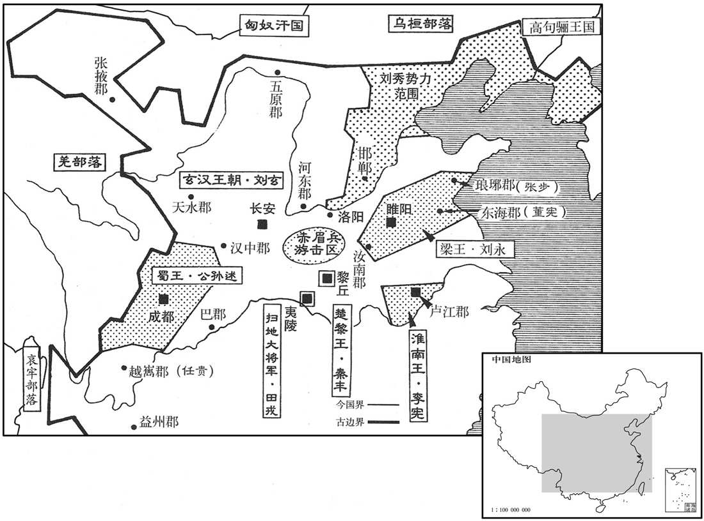
本年形势与背景参考图
申屠建、李松自长安迎更始迁都；二月，更始发洛阳。初，三辅豪桀假号诛莽者，〔谓假汉将军号也。〕人人皆望封侯；申屠建既斩王宪，又扬言「三辅儿大黠，〔黠，下八翻，桀黠也。〕共杀其主。」吏民惶恐，属县屯聚；建等不能下。更始至长安，乃下诏大赦，非王莽子，他皆除其罪，于是三辅悉平。
申屠建、李松自长安迎接刘玄迁都。二月，刘玄从洛阳出发。当初，三辅的英雄人物借用汉将军号诛杀了王莽，人人都盼望封侯。申屠建既把王宪杀了，又宣扬说：“三辅男子太凶狠狡黠，一起杀死了他们的首领。”官员百姓一片恐慌，三辅所属各县聚兵自保，申屠建等不能攻下。刘玄到了长安，才下诏大赦，除王莽后代外，其他都免其罪，于是三辅尽得安定。
时长安唯未央宫被焚，其余宫室、供帐、仓库、官府皆按堵如故，市里不改于旧。更始居长乐宫，〔乐，音洛。〕升前殿，郎吏以次列庭中；更始羞怍，俛首刮席，不敢视。〔贤曰：怍，颜色变也。俛，俯也。刮，爬也；怍，才各翻。俛，音免。〕诸将后至者，更始问：「虏掠得几何﹖」左右侍官皆宫省久吏，惊愕相视。〔给事天子左右者，谓之侍官。〕
当时长安只有未央宫被焚，其余宫室、供具张设、仓库、官府，都安然无恙，犹如以前，城市街巷和原来一样没有改变。刘玄在长乐宫居住，登上前殿，官吏们按照次序，排列在正殿前的院子里。刘玄羞愧惭怍，俯下头用手刮席，不敢看人。将领们有后到的，刘玄问：“抢了多少东西？”左右侍官都是宫禁中的旧吏，对此惊愕不已，相视无语。
李松与棘阳赵萌说更始宜悉王诸功臣；〔说，输芮翻。王，于况翻。〕朱鲔争之，以为高祖约，非刘氏不王。〔鲔，于轨翻。〕更始乃先封诸宗室：祉为定陶王，〔班志：定陶县，属济阴郡。宋白曰：定陶故城在曹州东北三十七里。〕庆为燕王，〔燕，于贤翻。〕歙为元氏王，〔元氏县，属常山郡。阚骃曰：赵公子元之封邑，故曰元氏〕嘉为汉中王，〔祉，舂陵康侯敞之子，大宗也。庆，敞之弟。嘉，敞之弟子。歙，更始之叔父。歙，许及翻。〕赐为宛王，〔宛县，属南阳郡。宋白曰：邓州南阳县，汉之宛县。〕信为汝阴王；〔班志，汝阴县属汝南郡，故胡国；唐颍州治所。〕然后立王匡为泚阳王，〔「泚阳」，后汉书作「比阳」。比阳县，属南阳郡；唐属唐州。〕王凤为宜城王，〔班志，宜城县属南郡，故鄢。宋为大堤之地，立华山郡；后魏改宜城郡；唐为县，属襄州。〕朱鲔为胶东王，〔胶东，汉王国，都即墨。贤曰：故城在今莱州胶水县东南。〕王常为邓王，〔邓县，属南阳郡，故邓国；唐为邓城县，属襄州。〕申屠建为平氏王，〔班志，平氏县属南阳郡，有桐柏山；唐为桐柏县，属唐州。〕陈牧为阴平王，〔贤曰：阴平县，属广汉郡。宋白曰：唐文州曲水县，汉阴平道也。〕卫尉大将军张卬为淮阳王，〔淮阳，本陈国；汉为淮阳国。贤曰：淮阳故城，在今陈州宛丘县东南。〕执金吾大将军廖湛为穰王，〔穰县，属南阳郡。师古曰：今邓州穰县是也。〕尚书胡殷为随王，〔随县，属南阳郡，古随国；唐为随州。〕柱天大将军李通为西平王，〔贤曰：西平县，属汝南郡；故城在今豫州郾城县南。〕五威中郎将李轶为舞阴王，〔舞阴县，属南阳郡。宋白曰：唐州泌阳县，本汉舞阴县地。舞阳故城在叶县东十里。〕水衡大将军成丹为襄邑王，〔襄邑县，属陈留郡。国〔圈〕称曰：襄邑，宋地，本承匡襄陵乡也。宋襄公所葬，故曰襄陵。秦始皇以承匡卑湿，徙县于襄陵，故曰襄邑。县西十里有承匡故城。贤曰：今襄邑县在宋州西。〕骠骑大将军宗佻为颍阴王，〔佻，他雕翻，又田聊翻。班志，颍阴县，属颍川郡。〕尹尊为郾王。〔班志，郾县，属颍川郡。宋白曰：七国时，魏之下邑，今许州郾城县是也。括地志：豫州褒信县，本汉郾县地。师古曰：郾，一战翻。〕唯朱鲔辞不受；乃以鲔为左大司马，宛王赐为前大司马，使与李轶等镇抚关东。又使李通镇荆州，王常行南阳太守事。以李松为丞相，赵萌为右大司马，共秉内任。〔内任，谓朝廷之内〕。
李松与棘阳人赵萌建议刘玄尽封功臣为王。朱鲔与他们争辩，认为汉高祖刘邦事先说定，不是刘姓皇族不能当王。刘玄于是首先赐封刘姓宗族：刘祉当定陶王，刘庆当燕王，刘歙当元氏王，刘嘉当汉中王，刘赐当宛王，刘信当汝阴王。然后立王匡当阳王，王凤当宜城王，朱鲔当胶东王，王常当邓王，申屠建当平氏王，陈牧当阴平王，卫尉大将军张当淮阳王，执金吾大将军廖湛当穰王，尚书胡殷当随王，柱天大将军李通当西平王，五威中郎将李轶当舞阴王，水衡大将军成丹当襄邑王，骠骑大将军宗佻当颍阴王，尹尊当郾王。只有朱鲔推辞不肯接受。于是任命朱鲔当左大司马，宛王刘赐当前大司马，让他们与李轶等人安抚函谷关以东地区。又让李通镇守荆州，王常代理南阳太守。任命李松当丞相，赵萌当右大司马，共同承担朝廷之内的责任。
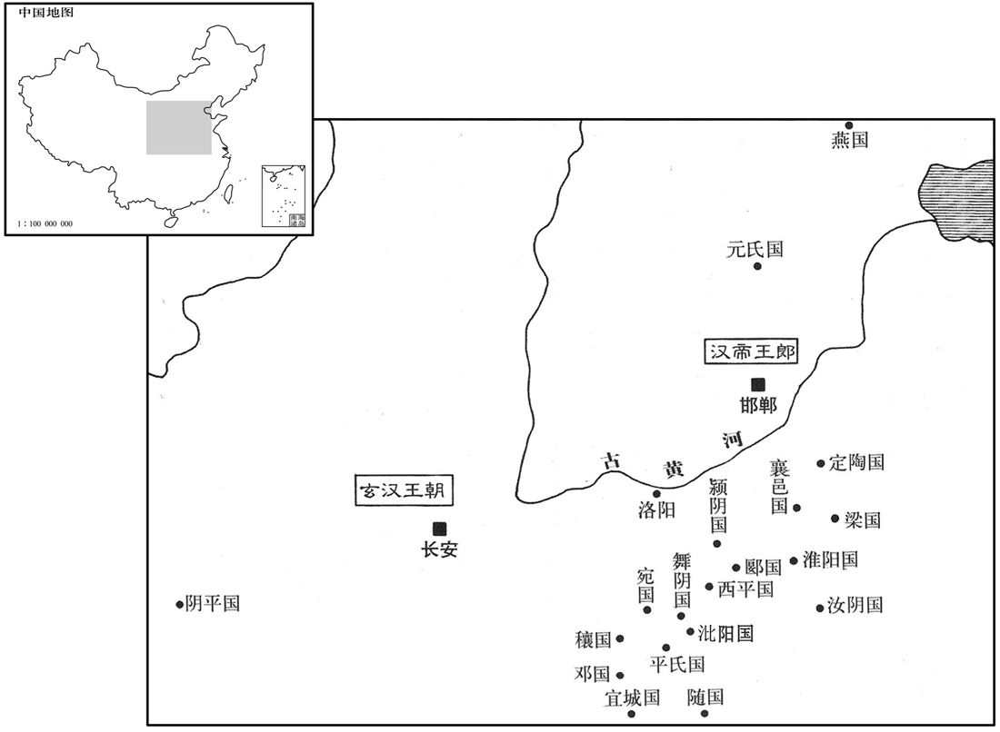
更始纳赵萌女为夫人，故委政于萌，日夜饮燕后庭；群臣欲言事，辄醉不能见，时不得已，乃令侍�之仃c中与语。韩夫人尤嗜酒，每侍饮，见常侍奏事，〔中常侍，受外朝臣奏事而奏之天子。〕辄怒曰：「帝方对我饮，正用此时持事来邪！」起，抵破书案。〔贤曰：抵，击也。〕赵萌专权，生杀自恣。郎吏有说萌放纵者，更始怒，拔剑斩之，自是无敢复言。〔复，扶又翻。〕以至群小、膳夫皆滥授官爵，长安为之语曰：「緖下养，中郎将。〔公羊传曰：炊烹为养，音弋亮翻。〕烂羊胃，骑都尉。烂羊头，关内侯。」〔言以烹煮熟烂为功也。〕军师将军李淑上书谏曰：「陛下定业，虽因下江、平林之势，斯盖临时济用，不可施之既安。唯名与器，圣人所重；〔孔子曰：唯名与器不可以假人。〕今加非其人，望其裨益万分，犹缘木求鱼，升山采珠。〔贤曰：言求之非所，不可得也。〕海内望此，有以窥度汉祚！」〔度，徒洛翻。〕更始怒，囚之。诸将在外者皆专行诛赏，各置牧守；州郡交错，不知所从。由是关中离心，四海怨叛。
刘玄娶赵萌女儿当夫人，所以把政事都给赵萌去管，日夜在后宫饮宴。臣属们想向君主奏闻或议论政事，刘玄总是因醉酒而不能相见，有时不得已，就命侍中坐帐幕之中与群臣说话。韩夫人尤其爱好喝酒，每当侍奉刘玄喝酒，见中常侍向天子奏事，总是发怒说：“皇上正和我喝酒，你偏利用这时奏事呀！”于是起身，击破书案。赵萌专擅大权，自己随意杀人。郎官中有人说赵萌放纵，刘玄大怒，拔剑斩杀了那个人，从此没有人敢再说赵萌的不是。以至众小人、厨子，都被滥授官爵。长安人把这件事编成歌谣：“灶下炊烹忙，升为中郎将。烹煮烂羊胃，当了骑都尉。烹煮烂羊头，当了关内侯。”军师将军李涉上书规劝说：“陛下创业，虽然是利用下江兵、平林兵的势力，但这是临时措施，不可把它施用于已经安定的时期。只有名份与车服仪制，是圣人所看重的，现在给了不应该给的人，希望他们有万分益处，这犹如上树找鱼，登山采珠。四海之内看到这样，会有人暗中窥伺汉朝的皇位。”刘玄大怒，把他囚禁起来。将领们在朝廷外的都自行赏罚，各设官吏，各州、各郡交叉错杂，不知服从谁好。因此关中地区离心，全国怨恨叛乱。
更始征隗嚣及其叔父崔、义等。嚣将行，方望以更始成败未可知，固止之；嚣不听，望以书辞谢而去。嚣等至长安，更始以嚣为右将军，崔、义皆即旧号。〔就其旧号以授之。隗嚣违方望之言而从更始，违马援之言而叛光武，始则几至杀身，后则终于灭族，择木之难也。〕
刘玄征召隗嚣和他的叔父隗崔、隗义等人。隗嚣将要出发，方望因为刘玄成败尚不可知道，坚决地制止他，隗嚣不听他的建议，方望留下一封书信，告辞而去。隗嚣等到达长安，刘玄任命隗嚣当右将军，对隗崔、隗义都按旧有的称号赐封。
耿况遣其子弇奉奏诣长安，弇时年二十一。〔弇，古含翻。〕行至宋子，会王郎起，弇从吏孙仓、卫包曰：「刘子舆，成帝正统；拾此不归，远行安之！」弇按剑曰：「子舆弊贼，卒为降虏耳！〔从，才用翻。卒，终也，音子恤翻。〕我至长安，与国家陈上谷、渔阳兵马，归发突骑，〔贤曰：突骑，言能冲突军陈。〕以辚乌合之众，如摧枯折腐耳。〔贤曰：辚，轹也，音力刃翻。〕观公等不识去就，族灭不久也！」仓、包遂亡，降王郎。
耿况派遣他的儿子耿带着上呈奏章到长安，耿当时二十一岁。走到宋子，正值王郎起事，耿的从官孙仓、卫包说：“刘子舆乃是汉成帝一脉相传的嫡子，舍弃他不归附，远行到哪里去？”耿用手握着剑柄说：“刘子舆是个欺骗蒙混的贼子，最终要成为投降的俘虏。我到长安，向朝廷叙说上谷郡和渔阳郡的兵马状况，回去后征发能冲突军队的骑兵，用来践踏那些乌合之众，犹如摧枯拉朽一般。看你等没有择主而从的眼光，灭族之祸不远了！”孙仓、卫包于是逃亡，投降了王郎。
弇闻大司马秀在卢奴，〔贤曰：卢奴，县名，属中山国；故城在今定州安喜县。水经注曰：县有黑水故池。水黑曰卢，不流曰奴，因以为名。〕乃驰北上谒；〔上，时掌翻；下异上同。〕秀留署长史，与俱北至蓟。〔蓟，故燕都；昭帝改燕为广阳国，亦治蓟。〕王郎移檄购秀十万户，秀令功曹令史颍川王霸至市中募人击王郎，〔汉旧注：公府令史，秩百石。霸时为大司马功曹令史。〕市人皆大笑，举手邪揄之，霸惭懅而反。〔贤曰：说文曰：歋臓，手相笑也。歋，音弋支翻。臓，音踰，或音由。此云邪揄，语轻重不同。懅，亦凓也，音遽。〕秀将南归，耿弇曰：「今兵从南方来，不可南行。渔阳太守彭宠，公之邑人；〔彭宠，南阳宛人。〕上谷太守，即弇父也。发此两郡控弦万骑，邯郸不足虑也。」秀官属腹心皆不肯，曰：「死尚南首，奈何北行入囊中！」〔贤曰：渔阳、上谷北接塞垣，至彼路穷，如入囊中也。首，音式救翻。〕秀指弇曰：「是我北道主人也。」
耿听说大司马刘秀在卢奴，于是骑马奔驰北上拜见。刘秀让他留在府中任长史，与他一块儿北上到达蓟。王郎命人传递檄书，用十万户的采邑作悬赏，擒杀刘秀。刘秀命令大司马功曹令史颍川人王霸到市中召募人打击王郎。市人都发声大笑，举手挖苦他，王霸惭愧而回。刘秀即将南归，耿说：“如今兵从南方来，不可以南行。渔阳太守彭宠，是您的同乡；上谷太守，是我的父亲。征发这两郡弓箭骑兵一万人，王郎就不值得忧虑了。”刘秀的属官和亲信都不肯，说：“人死了，头还要向着南方，为何向北进发入人囊中？”刘秀指着耿说：“这是我北路的主人。”
会故广阳王子接起兵蓟中以应郎，〔贤曰：广阳王名嘉，武帝五代孙。〕城内扰乱，言邯郸使者方到，二千石以下皆出迎。于是秀趣驾而出，〔贤曰：趣，急也，音促。〕至南城门，门已闭；攻之，得出，遂晨夜南驰，不敢入城邑，舍食道傍。至芜蒌亭，〔贤曰：芜蒌，亭名，在今饶阳东北。蒌，音力于翻。〕时天寒烈，冯异上豆粥。至饶阳，〔贤曰：饶阳，县名，属安平国，在饶河之阳；故城在今瀛州饶阳县东北。〕官属皆乏食。秀乃自称邯郸使者，入传舍，〔贤曰：传舍，客馆也。传，音知恋翻；下同。〕传吏方进食，从者饥，争夺之。〔从，才用翻。〕传吏疑其伪，乃椎鼓数十通，绐言「邯郸将军至」；〔贤曰：椎，直追翻。绐，言欺诳也，音殆。〕官属皆失色。秀升车欲驰，既而惧不免，徐还坐，曰：「请邯郸将军入。」久，乃驾去。晨夜兼行，蒙犯霜雪，面皆破裂。
正巧原广阳王的儿子刘接在蓟中起兵，以响应王郎，城内搅扰，混乱不堪，传说王郎的使节刚到，二千石及以下的官吏都出来迎接。于是刘秀急催车辆而出，到南城门，城门已经关闭。攻击南城门，才得出城。于是昼夜向南奔驰，不敢进入城市，食宿都在路旁。到芜蒌亭，当时天气酷寒，冯异呈上豆粥。到饶阳，属官都缺乏食品。刘秀于是自称邯郸的使节，进入客馆。客馆的官吏正在吃饭，刘秀的随从饥饿难忍，争抢食物。官吏怀疑刘秀是假使节，于是用棒槌敲打鼓数十遍，欺哄说：“邯郸将军到。”刘秀的属官都吓得变了脸色。刘秀登车打算逃走，随后又怕逃不掉，慢慢回到座位上，说：“请邯郸将军进来。”过了很久，才乘车辆离开。日夜兼程，顶霜冒雪，满面裂痕。
至下曲阳，〔贤曰：下曲阳，县名，属巨鹿郡。常山郡有上曲阳，故此言下。刘昭曰：下曲阳有鼓聚，故翟鼓子国。宋白曰：镇州鼓城县，汉下曲阳县地。〕传闻王郎兵在后，从者皆恐。〔从，才用翻。〕至滹沱河，〔贤曰：山海经云：大戏之山，滹沱之水出焉。在今代州繁畤县，东流经定州深泽县东南，即光武所渡处；今俗犹谓之危渡口。臣贤按：滹沱河旧在饶阳南，至魏太祖曹操，因饶河故渎决令北注新沟水，所以今在饶阳县北。〕候吏还白「河水流澌，〔贤曰：澌，音斯，冰澌也。〕无船，不可济。」秀使王霸往视之。霸恐惊众，欲且前，阻水还，即诡曰：「冰坚可度。」官属皆喜。秀笑曰：「候吏果妄语也！」遂前。比至河，〔比，必寐翻，及也。〕河冰亦合，乃令王霸护渡，〔贤曰：监护渡也。〕未毕数骑而冰解。至南宫，〔贤曰：南宫，县名，属信都国，今冀州县也。〕遇大风雨，秀引车入道傍空舍，冯异抱薪，邓禹爇火，〔贤曰：爇，音而悦翻。〕秀对緖燎衣，〔贤曰：燎，炙也。〕冯异复进麦饭。〔复，扶又翻。〕
刘秀等到了下曲阳，传言王郎追兵在后，随从的官员都很害怕。到滹沱河，探听消息的官员回来说：“河水解冻，冰随水流，没有船，不可以渡。”刘秀派王霸前往观看。王霸恐怕惊吓众人，打算暂且向前，受到水的阻挡再回来，就狡诈地说：“河水结冰，坚实可渡。”属官都很高兴。刘秀笑着说：“去探听的官吏果然瞎说！”于是向前。等到了河畔，河水却也结冰了。刘秀命令王霸监护渡河，只剩下几个骑马的人还没有到达河对岸时，冰就融解了。到了南宫，遇到大风雨，刘秀引车进入路旁的空房，冯异抱来柴草，邓禹点燃火，刘秀对灶烤衣，冯异又呈上麦饭。
进至下博城西，〔贤曰：下博县，属信都国；在博水之下，故曰下博；故城在今冀州，下博县南。〕惶惑不知所之。有白衣老父在道旁，〔贤曰：盖神人也。今下博县西有祠堂。〕指曰：「努力！信都郡为长安城守，〔贤曰：信都郡，今冀州。为，于伪翻。〕去此八十里。」秀即驰赴之。是时郡国皆已降王郎，独信都太守南阳任光、和戎太守信都邳肜不肯从。〔东观记曰：〔王莽分信都为和戎，居下曲阳。邳肜传作「和成」。成字为是。风俗通：奚仲为夏车正，封于邛，其后以为氏。肜，余中翻。〕光自以孤城独守，恐不能全，〔贤曰：独守无援，故恐。〕闻秀至，大喜；吏民皆称万岁。邳肜亦自和戎来会，议者多言可因信都兵自送，西还长安。邳肜曰：「吏民歌吟思汉久矣，故更始举尊号而天下响应，三辅清宫除道以迎之。今卜者王郎，假名因势，驱集乌合之众，遂振燕、赵之地，〔振，举也。〕无有根本之固。明公奋二郡之兵以讨之，〔二郡，信都、和成。〕何患不克！今释此而归，岂徒空失河北，必更惊动三辅，堕损威重，〔堕，读曰隳。〕非计之得者也。若明公无复征伐之意，〔复，扶又翻。〕则虽信都之兵，犹难会也。何者﹖明公既西，则邯郸势成，民不肯捐父母、背成主而千里送公，〔谓光武西归，则王郎之位号定，故曰成主。背，蒲妹翻。考异曰：范书邳肜传：「邯郸成，民不肯背」。「成主」字皆作「城」。袁纪作「邯郸和城，民不肯捐和城而千里送公」，汉春秋作「邯郸之民不能捐父母、背成主。」按文意，「城」皆当作「成」。邯郸成，谓邯郸势成也。成主，谓王朗为已成之主也。〕其离散亡逃可必也！」秀乃止。
刘秀等人前进到下博城西，惊惶迷惑，不知道往哪里去。有身着白衣的老人在路旁，指着前面说：“努力干吧！信都郡是长安的门户，离这里还有八十里。”刘秀立即奔赴那里。当时各郡国都已投降王郎，只有信都太守南阳人任光、和戎太守信都人邳肜不肯归附。任光自己认为独守孤城，恐怕不能保全，听说刘秀到来，非常高兴，官民齐呼万岁。邳肜也从和戎来相会。议论的人多数说可以依靠信都兵护送，西回长安。邳肜说：“官民歌咏思念汉朝很久了，所以刘玄举起尊贵的称号而天下响应，三辅清理宫室，修治道路，来迎接他。今占卜先生王郎，冒充汉成帝庶子之名，顺应着事物发展的趋势，驱赶汇集乌合之众，于是声振燕、赵之地，但并无坚固的基础。您使信都、和戎两郡的军队彭起劲来讨伐王郎，为什么担忧不能取胜！现在放弃这样的条件而归，岂不是白白地失去了黄河以北，而且势将惊动三辅，大损您的威信，不是良策。如果阁下没有讨伐王郎的意图，那么即使是信都的地方部队，也难以召集。为什么？阁下既然西行，邯郸方面就控制了局势。百姓不肯抛弃父母妻子，背叛现成的主人，千里迢迢去护送您。他们离散逃亡是必然的。”刘秀于是决定不走。
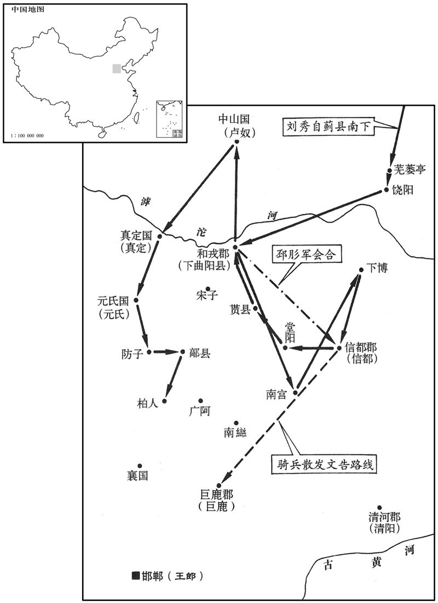
秀以二郡兵弱，欲入城头子路、力子都军中；〔爰曾起兵卢城头，曾字子路，故号城头子路。考异曰：范书作「力子都」。同编修刘攽曰：「力」当作「刁」，音雕。〕任光以为不可。乃发傍县，得精兵四千人，拜任光为左大将军，信都都尉李忠为右大将军，邳肜为后大将军；和戎太守如故，信都令万修为偏将军，〔万，姓也。孟子弟子有万章。〕皆封列侯。留南阳宗广领信都太守事，使任光、李忠、万修将兵以从。〔从，才用翻；下使从同。〕邳肜将兵居前，任光乃多作檄文曰：「大司马刘公将城头子路、力子都兵百万众从东方来，击诸反虏！」遣骑驰至巨鹿界中。吏民得檄，传相告语。〔传，知恋翻。语，牛倨翻。〕秀投暮入堂阳界，〔贤曰：堂阳县，属巨鹿郡，在堂水之阳；故城在今冀州鹿城县南。〕多张骑火，弥满泽中，堂阳即降；又击贳县，降之。〔贤曰：贳县，属巨鹿郡；音时夜翻；师古音式制翻。〕城头子路者，东平爰曾也，寇掠河、济间，有众二十余万，〔济，子礼翻。〕力子都有众六七万，故秀欲依之。昌城人刘植聚兵数千人据昌城，迎秀；〔贤曰：昌城县，属信都郡；故城在今冀州西北。杜佑曰：故城在冀州信都县北。水经注引应劭曰：在堂阳县北三十里。〕秀以植为骁骑将军。耿纯率宗族宾客二千余人，老病者皆载木自随，〔贤曰：左传曰：又如是而嫁，将就木焉。木，谓棺也。老病者恐死，故载以从军。〕迎秀于育；〔贤曰：育，县名；故城在冀州。余考两汉志无育县，盖「贳」字之误。〕拜纯为前将军。进攻下曲阳，降之；众稍合，至数万人，复北击中山。〔贤曰：中山国，一名中人亭；故城在今定州唐县东北。张曜中山记曰：城中有山，故曰中山也。复，扶又翻。〕耿纯恐宗家怀异心，乃使从弟欣宿归，烧庐舍以绝其反顾之望。
刘秀因为两郡的兵力太弱，打算投奔城头子路、力子都的部队。任光认为不可以。于是下令征集邻县丁壮，得精锐部队四千人，任命任光当左大将军，信都都尉李忠当右大将军，邳肜当后大将军，仍兼和戎太守，信都令万当偏将军，都封列侯。刘秀任命南阳人宗广暂任信都太守，让任光、李忠、万跟随自己向王郎反击。邳肜带兵充当前锋。任光于是大量编写声讨文告说：“大司马刘秀率城头子路、力子都的大军百万，从东方前来，讨伐叛逆！”派骑兵到钜鹿郡内散发。官民看到文告后，互相传播。刘秀到晚上抵达堂阳县界，命许多骑兵打起火把，水畔一片光亮，堂阳县误以为大军压境，马上投降。刘秀又进击贳县，贳县也投降了。城头子路本是东平郡人爰曾，在黄河、济水一带抢劫掳掠，有部众二十余万人，而力子都也有部众六七万人，所以刘秀曾想前往投靠。昌城人刘植集结士兵数千人，占据昌城，迎接刘秀。刘秀任命刘植当骁骑将军。耿纯率领宗族宾客二千余人，年老患病的都随身带着棺木，在育地迎接刘秀。刘秀任命耿纯当前将军。进攻下曲阳，下曲阳投降。刘秀的部队渐渐汇合，达数万人。再向北进攻中山。耿纯恐怕宗族怀有二心，就派他的堂弟耿回到故乡，烧掉了房舍，以断绝他们的反顾之心。
秀进拔卢奴，〔杜佑曰：定州安喜县，汉卢奴也。〕所过发奔命兵，移檄边郡共击邯郸；郡县还复响应。〔复，扶又翻；下同。〕时真定王杨起兵附王郎，众十余万，秀遣刘植说杨，杨乃降。〔杨，常山宪王舜六世孙。舜，景帝子也。说，输芮翻。〕秀因留真定，纳杨甥郭氏为夫人以结之。进击元氏、防子，皆下之。〔贤曰：元氏、防子属常山郡；并今赵州县也。防与房，古字通用。〕至鄗，击斩王郎将李恽；〔鄗县，属常山郡。贤曰：今赵州高邑县也。鄗，音呼各翻。恽，于粉翻。〕至柏人，复破郎将李育。〔贤曰：柏人，县名，属赵国；今邢州县；故城在县之西北。〕育还保城；攻之，不下。
刘秀进军，攻陷卢奴。在所经过的郡县，征发急用的非常部队，向沿边郡县发布文告，号召共击邯郸，各郡县纷纷响应。这时真定王刘杨起兵投靠王郎，部众十余万人。刘秀派刘植游说刘杨，刘杨便投降了。刘秀于是进入真定，并娶刘杨的甥女郭氏当夫人，用以团结刘杨。继续前进，攻击元氏、防子，都攻下了。到达县，击杀王郎的将军李恽。进抵柏人，又击败王郎的将军李育。李育撤退，固守柏人城。刘秀进攻，未能攻下。
南郑人延岑起兵据汉中；〔延，姓；岑，名。〕汉中王嘉击降之，有众数十万。校尉南阳贾复见更始政乱，乃说嘉曰：〔说，输芮翻。〕「今天下未定，而大王安守所保，所保得无不可保乎﹖」〔所保，谓汉中也。〕嘉曰：「卿言大，非吾任也。大司马在河北，必能相用。」乃为书荐复乃长史南阳陈俊于刘秀。复等见秀于柏人，秀以复为破虏将军，俊为安集掾。〔刘玄传：玄初从陈牧等为其军安集掾。贤曰：欲以安集军众，故权以为官名。余谓光武用俊之意，不特安集军众，盖为民也。掾，俞绢翻。〕
南郑人延岑起兵占据汉中。汉中王刘嘉进击，延岑投降。刘嘉部众多至数十万。校尉南阳人贾复，眼见更始朝廷政治混乱，向刘嘉建议：“如今天下还没安定，大王却对你目前所有的东西心满意足。这些东西就没有不保的可能吗？”刘嘉说：“您说大话，不是我所能任用的。大司马刘秀在黄河以北，一定能任用您。”于是写信给刘秀，推荐贾复与长史南阳人陈俊。贾复等抵达柏人，刘秀任命贾复当破虏将军，陈俊当安集掾。
秀舍中儿犯法，军市令颍川祭遵格杀之，〔从军者非一处人，故于军中立市，使相贸易，置令以治之。姓谱：周公第五子祭伯，其后以为氏。贤曰：祭，音侧介翻。〕秀怒，命收遵。主簿陈副谏曰：「明公常欲众军整齐，今遵奉法不避，是教令所行也。」乃贳之，〔贤曰：贳，犹赦也。〕以为刺奸将军，〔王莽置左右刺奸，使督奸猾，光武因以为将军号。〕谓诸将曰：「当备祭遵！吾舍中儿犯法尚杀之，必不私诸卿也。」
刘秀家里的年轻仆人犯了法，军市令颍川人祭遵把他打死了。刘秀大怒，命人逮捕了祭遵。主簿陈副劝谏说：“您常要求军队军纪整肃，现在祭遵执法毫不回避，这是您的教令得到了贯彻执行呀！”刘秀于是饶恕了祭遵，用他担任刺奸将军。刘秀跟众将说：“你们应该小心祭遵！我家里的小仆人犯法，尚且给杀了，他必定不会偏袒你们。”
初，王莽既杀鲍宣，〔事见三十六卷平帝元始三年。〕上党都尉路平欲杀其子永；太守苟谏保护之，永由是得全。更始征永为尚书仆射，行大将军事，将兵安集河东、并州，〔河东郡，本属司隶。令永安集河东及并州所部诸郡。〕得自置偏裨。永至河东，击青犊，大破之。以冯衍为立汉将军，屯太原，与上党太守田邑等缮甲养士以扞卫并土。
最初，王莽诬杀鲍宣以后，上党郡都尉路平便打算杀鲍宣的儿子鲍永。郡太守苟谏进行保护，鲍永才得以活命。刘玄征召鲍永，任命为尚书仆射，代理大将军，率领军队安抚河东郡及并州所属郡县，可以自行任命偏将和裨将。鲍永到河东郡，攻击青犊，大获全胜。任命冯衍当立汉将军，驻守太原，与上党太守田邑等修理装备，供养并训练士兵，以捍卫并州疆土。
或说大司马秀以守柏人不如定巨鹿，〔说，输芮翻；下同。〕秀乃引兵东北拔广阿。〔贤曰：广阿，县名，属巨鹿郡；故城在今赵州象城县西北。杜佑曰：赵州昭庆县，汉广阿县。〕秀披舆地图，〔武帝时，群臣请王皇子，御史奏舆地图。索隐曰：谓地为舆者，天地有覆载之德，故谓天为盖，谓地为舆。故地图称舆地图，疑自古有此名，非始汉也。〕指示邓禹曰：「天下郡国如是，今始乃得其一；子前言以吾虑天下不足定，何也﹖」禹曰：「方今海内殽乱，人思明君，犹赤子之慕慈母。古之兴者在德薄厚，不以大小也！」
有人向大司马刘秀建议，用柏人当基地，不如用钜鹿。于是刘秀率军向东北进发，攻陷广阿。刘秀翻阅地图，指给邓禹看，说：“天下郡国如此之多，到今天我才得到其中的一个。你先前认为我忧虑天下不能平定是多余的，为什么？”邓禹回答说：“现在天下混乱，人民想要英明的君王，好象初生的婴儿思慕慈母。古代兴起的帝王，只在他品德的厚薄，不在他地盘的大小。”
蓟中之乱，耿弇与刘秀相失，北走昌平，〔贤曰：昌平县，属上谷郡；今幽州县；故城在县东。〕就其父况，因说况击邯郸。〔说，输芮翻；下同。〕时王郎遣将徇渔阳、上谷，急发其兵，北州疑惑，多欲从之。上谷功曹寇恂、门下掾闵业〔闵，姓也。鲁有大夫闵马父；孔子弟子有闵子骞。〕说况曰：「邯郸拔起，〔贤曰：拔，猝也。〕难可信向。大司马，刘伯升母弟，尊贤下士，可以归之。」〔下，遐稼翻。〕况曰：「邯郸方盛，力不能独拒，如何﹖」对曰：今上谷完实，控弦万骑，可以详择去就。恂请东约渔阳，齐心合众，邯郸不足图也！」况然之，遣恂东约彭宠，欲各发突骑二千匹、步兵千人诣大司马秀。
蓟中之乱时，耿与刘秀失散，向北逃到昌平，回到他父亲耿况那里，趁机劝说耿况攻击邯郸。而这时候，王郎派出的将领，正在渔阳、上谷夺取土地，并紧急征调那里的部队，北方沿边郡县疑惑，但多数都打算服从。上谷郡功曹寇恂、门下掾闵业向耿况建议说：“邯郸仓猝崛起，前途难测。而大司马刘秀，是刘的亲弟弟，礼贤下士，我们可以归附他。”耿况说：“邯郸的势力正兴盛，我们不能单独抵抗，应该怎么办？”寇恂说：“现在上谷郡完好充实，拥有射箭骑兵一万人，可以认真选择自己的前途。我愿意前往东方的渔阳，与彭宠约定，同心合力，就用不着把邯郸放在心上。”耿况同意，派寇恂东行进见彭宠，互相约定，打算每郡出动骑兵突击队两千人、步兵一千人，到大司马刘秀那里去支援他。
安乐令吴汉、护军盖延、狐奴令王梁亦劝宠从秀，〔乐，音洛。盖，古盍翻。狐奴县，属渔阳郡。〕宠以为然；而官属皆欲附王郎，宠不能夺。汉出止外亭，〔外亭，城门外之亭也。〕遇一儒生，召而食之，〔食，读曰坔。〕问以所闻。生言：「大司马刘公，所过为郡县所称；邯郸举尊号者，实非刘氏。」汉大喜，即诈为秀书，移檄渔阳，使生赍以诣宠，令具以所闻说之。〔说，输芮翻。〕会寇恂至，宠乃发步骑三千人，以吴汉行长史，与盖延、王梁将之，南攻蓟，杀王郎大将赵闳。
安乐令吴汉、护军盖延、狐奴令王梁也劝彭宠归附刘秀，彭宠同意。可是，郡府的下属官员都愿归附王郎，彭宠不能决定。吴汉到城外巡查，在一个行人停留宿食的处所，遇到一位儒生，请来一块进餐，询问他听到的消息。儒生说：“大司马刘秀，受到他所经过的郡县的官民的称赞；而在邯郸举起尊贵称号的人，实际上不是刘氏子弟。”吴汉非常高兴，立即伪造了一份刘秀致送渔阳郡的文告，教那儒生拿着送给彭宠，让他把听到的消息告诉彭宠。恰好寇恂到达，彭宠于是派出步骑兵三千人，命吴汉代理长史，与盖延、王梁共同率领部队，南下进攻蓟县，杀死王郎大将赵闳。
寇恂还，遂与上谷长史景丹及耿弇将兵俱南，与渔阳军合，所过击斩王郎大将、九卿、校尉以下，凡斩首三万级，定涿郡、中山、巨鹿、清河、河间凡二十二县。前及广阿，闻城中车骑甚众，丹等勒兵问曰：「此何兵﹖」曰：「大司马刘公也。」诸将喜，即进至城下。城下初传言二郡兵为邯郸来，〔为，于伪翻；下同。〕众皆恐。刘秀自登西城楼勒兵问之；耿弇拜于城下，即召入，具言发兵状。秀乃悉召景丹等入，笑曰：「邯郸将帅数言我发渔阳、上谷兵，〔数，所角翻；下同。〕吾聊应言『我亦发之』，〔贤曰：王郎将帅数云欲发二郡兵以拒光武，光武聊亦应云然，犹今两军相戏弄也。孔颖达曰：聊，且略之辞。〕何意二郡良为吾来！〔考异曰：袁纪作「良牧为吾来」，今从景丹传。韵释：良，首也，信也。〕方与士大夫共此功名耳。」乃以景丹、寇恂、耿弇、盖延、吴汉、王梁皆为偏将军，使还领其兵，加耿况、彭宠大将军；封况、宠、丹延皆为列侯。
寇恂返回上谷，便与上谷长史景丹以及耿率军一同南下，与渔阳部队会合，所经过的地方，斩杀王郎任命的大将、九卿、校尉及以下，共计三万人，夺取涿郡、中山、巨鹿、清河、河间等二十二县。前锋到达广阿，听说城里兵马很多，景丹等停兵打听道：“这是什么人的军队？”回答说：“是大司马刘秀的。”将领们喜悦，立即来到城下。广阿城下最初谣传上谷、渔阳二郡的军队是王郎派来的，大家都很恐慌。刘秀整治军队，亲自登上西城楼，询问来意。耿就在城下拜见。刘秀立即请他进城，耿说明了两郡发兵经过，刘秀于是把景丹等将领全部请到城中，笑着说：“邯郸将领屡次说：‘我们征发了渔阳、上谷部队。’我姑且应付说：‘我也征发了渔阳、上谷部队。’想不到两郡真的为我而来！我正要与各位官员共同建立功名。”于是任命景丹、寇恂、耿、盖延、吴汉、王梁都当偏将军，让他们回去统领自己的部队。擢升耿况、彭宠为大将军。封耿况、彭宠、景丹、盖延四人列侯。
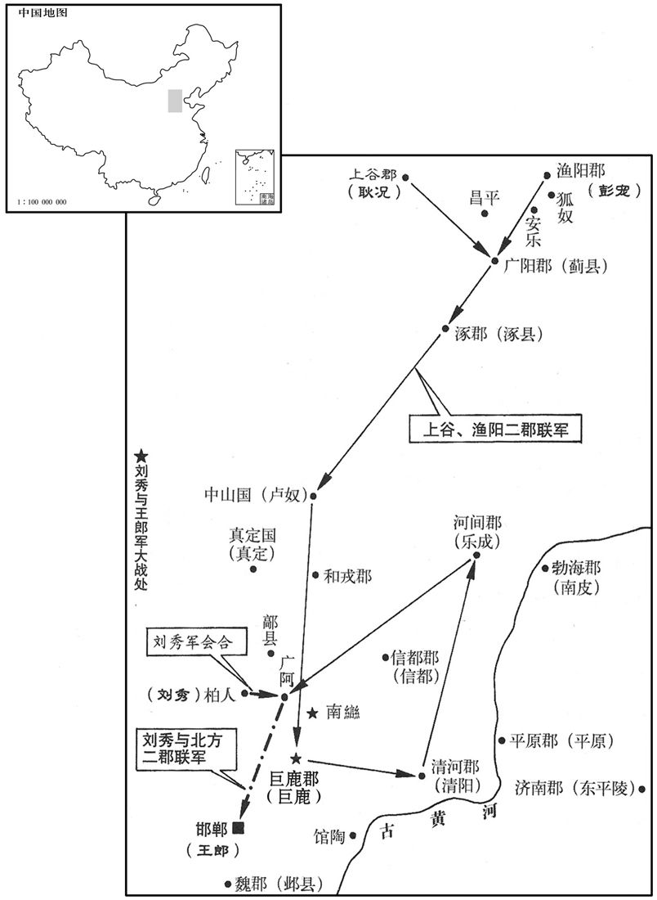
吴汉为人，质厚少文，造次不能以辞自达，〔少，诗沼翻。朱子曰：造次，急遽苟且之时。造，七到翻。〕然沈厚〔【章：十二行本「厚」作「勇」；乙十一行本同；孔本同；张校同。】〕有智略，〔沈，持林翻。〕邓禹数荐之于秀，秀渐亲重之。
吴汉为人朴实忠厚，不善言辞，遇到遇急情况，辞不达意，然而沉着而有谋略。邓禹多次向刘秀推荐，刘秀逐渐对他亲近器重。
更始遣尚书令谢躬率六将军讨王郎，不能下；秀至，与之合军，东围巨鹿，月余未下。王郎遣将攻信都，大姓马宠等开门内之。更始遣兵攻破信都，秀使李忠还，行太守事。王郎遣将倪宏、刘奉率数万人救巨鹿，秀逆战于南疖，不利。〔贤曰：南疖，县名，属巨鹿郡；故城在今邢州柏人县东北。左传：齐国夏伐晋，取栾，即其地也。其后南徙，故加「南」；今谓之伦城，声之转也。杜佑曰：唐巨鹿，汉南疖地；汉巨鹿县，今平乡也。疖，音力全翻。〕景丹等纵突骑击之，宏等大败。秀曰：「吾闻突骑天下精兵，今见其战，乐可言邪！」〔乐，音洛。〕
刘玄派尚书令谢躬率领六位将军讨伐王郎，没有进展。刘秀到，两军相合，向东围攻钜鹿，一月有余不能取胜。王郎派将攻信都，城中大姓马宠等打开城门迎接。刘玄派兵攻破信都，刘秀让李忠返回信都，代理太守。王郎派遣将领倪宏、刘奉率数万人救钜鹿，刘秀在南迎战，不顺利。景丹等人发骑兵突击部队进行攻击，倪宏等大败。刘秀说：“我听说骑兵突击部队是天下的精兵，今天看见它战斗，高兴得不能用言语来表达。”
耿纯言于秀曰：「久守巨鹿，士众疲弊；不如及大兵精锐，进攻邯郸，若王郎已诛，巨鹿不战自服矣。」秀从之。夏，四月，留将军邓满守巨鹿；进军邯郸，连战，破之，郎乃使其谏大夫杜威请降。威雅称郎实成帝遗体，秀曰：「设使成帝复生，〔复，扶又翻。〕天下不可得，况诈子舆者乎！」威请求万户侯，秀曰：「顾得全身可矣！」威怒而去。秀急攻之，二十余日；五月，甲辰，郎少傅李立开门内汉兵，遂拔邯郸。郎夜亡走，王霸追斩之。秀收郎文书，得吏民与郎交关谤毁者数千章；〔关，通也。〕秀不省，〔省，悉井翻。〕会诸将军烧之，曰：「令反侧子自安！」〔贤曰：反侧不安。诗曰：展转反侧。〕
耿纯向刘秀建议：“我们长期围守钜鹿，官兵将会疲惫。不如趁大军士气旺盛进攻邯郸，如果王郎被诛，钜鹿用不着战斗自会服从。”刘秀采纳。夏季，四月，刘秀留下将军邓满继续围困钜鹿。自率大军向邯郸挺进，连续战斗，打败敌人。王郎于是派谏大夫杜威请求投降。杜威强调王郎确实是汉成帝刘骜的嫡亲骨肉，刘秀说：“假使汉成帝复活，也不能得到天下，何况他的冒牌儿子？”杜威请求封王郎万户侯，刘秀说：“饶他不死已经够了。”杜威大怒离去。刘秀发动猛烈攻击，历时二十余日。五日甲辰（初一），王郎少傅李立打开城门让汉兵入内，于是邯郸陷落。王郎乘夜逃走，王霸追捕擒获，就地斩首。刘秀检查王郎的文书，发现有自己的官吏与平民的奏章数千，奏章上除了向王郎表示效忠外，还有谤毁刘秀的内容。刘秀并不察看，他集合全体将领，用火烧毁奏章，说：“使背叛的人安心。”
秀部分吏卒各隶诸军，〔句绝。〕士皆言愿属大树将军。大树将军者，偏将军冯异也，为人谦退不伐，敕吏士非交战受敌，常行诸营之后。每所止舍，诸将并坐论功，异常独屏树下，〔屏，必郢翻，蔽也。坐树下以自蔽也。〕故军中号曰「大树将军」。
刘秀把新官兵分配给各将领。大家都说愿属大树将军。所谓大树将军是指偏将军冯异。冯异为人谦逊退让，不夸耀自己的才能、功劳，他命令他的部队，除非跟敌人交战或遭受敌人的攻击，通常要排在别的部队的后面。每到一个地方停留，当将领们坐在一起谈论功劳时，冯异常常独自躲到树下。所以军中称他“大树将军”。
护军宛人朱佑言〔【章：十二行本「言」上有「从容」二字；乙十一行本同；孔本同。】〕于秀曰：「长安政乱，公有日角之相，此天命也！」〔考异曰：范书、袁纪「朱祜」皆作「佑」。按东观记，「佑」皆作「福」，避安帝讳。许慎说文祜字无解，云上讳。然则佑名当作「示」旁「古」，古今之古，不当作左右之右也。」〔【章：十二行本正作「祜」；乙十一行本同；孔本同；张校同；云廿九叶前三行同。】〕相，息亮翻。〕秀曰：「召刺奸收护军！」〔祜事伯升为大司徒护军；光武为大司马，复以为护军。百官表；护军都尉，秦官；平帝元始元年，更名护军。〕祜乃不敢复言。〔复，扶又翻；下同。〕
护军宛城人朱祜向刘秀建议：“长安政令混乱，阁下有帝王的相貌，这是天命！”刘秀说：“快教刺奸来逮捕护军！”朱祜不敢再开口。
更始遣使立秀为萧王，〔贤曰：萧县，属沛郡；今徐州县也。〕悉令罢兵，与诸将有功者诣行在所；〔蔡邕独断曰：天子以四海为家，故谓所居为行在所。〕遣苗曾为幽州牧，韦顺为上谷太守，蔡充为渔阳太守，并北之部。
刘玄派遣使节封刘秀当萧王，下令所有部队一律复员。命刘秀与有功将领，一同到长安。派苗曾当幽州牧，韦顺当上谷太守，蔡充当渔阳太守，同时到北方赴任。
萧王居邯郸宫，昼卧温明殿，〔贤曰：赵王如意之殿也；故基在今洺州邯郸县内。水经注：温明殿在丛台西。〕耿弇入，造下请间，〔造，七到翻。〕因说曰：「吏士死伤者多，请归上谷益兵。」萧王曰：「王郎已破，河北略平，复用兵何为﹖」〔复，扶又翻。〕弇曰：「王郎虽破，天下兵革乃始耳。今使者从西方来，欲罢兵，不可听也。铜马、赤眉之属数十辈，辈数十百万人，所向无前，圣公不能办也，〔贤曰：「办，犹成也；音蒲苋翻。余据史记，项梁曰：「使公主某事不能办，」即此意。今人谓了事为办事。〕败必不久。」萧王起坐曰：「卿失言，我斩卿！」弇曰：「大王哀厚弇如父子，故敢披赤心。」萧王曰：「我戏卿耳，何以言之﹖」弇曰：「百姓患苦王莽，复思刘氏，闻汉兵起，莫不欢喜，如去虎口得归慈母。今更始为天子，而诸将擅命于山东，贵戚纵横于都内，〔横，户孟翻。都内，谓长安。〕虏掠自恣，元元叩心，更思莽朝，〔朝，直遥翻。〕是以知其必败也。公功名已着，以义征伐，天下可传檄而定也，天下至重，公可自取，毋令他姓得之！」萧王乃辞以河北未平，不就征，始贰于更始。〔贤曰：贰，离异也。〕
刘秀住在邯郸赵王宫，白天在温明殿睡觉。耿闯入，来到床前请求单独谈话。乘机说：“官兵死伤太多，请准许我回上谷补充兵员。”刘秀说：“王郎已经消灭，黄河以北略微平定，还用兵干什么？”耿说：“王郎虽被打败，天下争战却刚刚开始。现在，朝廷的使节从西方来，要让我们的士兵复员，不可听从。铜马、赤眉一类的部队有数十支，而每一支都有数十万人，甚至一百万人，所向无敌。刘玄没有能力应付，不久就会溃败。”刘秀从床上起来坐下说：“你说了不该说的话，我杀了你！”耿说：“大王怜爱厚待我如同父子，所以我敢赤诚相待。”刘秀说：“我和你开玩笑罢了，你为什么这样说？”耿说：“全国百姓被王莽害得很苦，因而再次思念刘氏，听说汉兵崛起，无不高兴，如同逃脱虎口，回到慈母那里一样。现在刘玄当皇帝，将领们在崤山以东不受节制，皇亲国戚在长安胡作非为，随意抢劫掠夺，百姓捶打胸口，转而思念王莽新朝。因此，我知道刘玄必定失败。您的丰功英名传播海内，为了正义进行征伐，天下可以靠传递文告而安定。天下最重要的是政权您应该自己取得，莫让非刘姓皇族的人占有！”刘秀于是以河北还没有平定为推辞的理由，没有接受征召，开始与刘玄离异。
是时，诸贼铜马、大彤、高湖、重连、铁胫、大枪、尤来、上江、青犊、五校、五幡、五楼、富平、获索等各领部曲，众合数百万人，〔贤曰：诸贼或以山川土地为名，或以军容强盛为号。铜马贼帅东山荒秃、上淮况等，大彤渠帅樊重，尤来渠帅樊崇，五校贼帅高扈，檀乡贼帅董次仲，五楼贼帅张文，富平贼帅徐少，获索贼帅古师郎等，并见东观记。胫，形定翻。富平，县名，属平原郡；今棣州厌次县。〕所在寇掠。萧王欲击之，乃拜吴汉、耿弇俱为大将军，持节北发幽州十郡突骑；〔幽州十郡，涿郡、广阳、代郡、上谷、渔阳、辽西、辽东、玄菟、乐浪郡是也。〕苗曾闻之，阴敕诸郡不得应调。〔贤曰：调，发也。调，徒吊翻。〕吴汉将二十骑先驰至无终，〔贤曰：无终，本山戎国也，无终，山名，因以为国号；汉为县名，属右北平，故城在今幽州渔阳县。是时苗曾盖治无终。〕曾出迎于路，汉即收曾，斩之。耿弇到上谷，亦收韦顺、蔡充，斩之。北州震骇，于是悉发其兵。
当时，各路盗贼铜马、大彤、高湖、重连、铁胫、大枪、尤来、上江、青犊、五校、五幡、五楼、富平、获索等，各自率领部曲，总数有数百万人，在当地抢夺掳掠。刘秀打算进攻他们，于是任命吴汉、耿同时当大将军，持节征调幽州所属十郡的骑兵突击部队。幽州牧苗曾听到这个消息，暗中吩咐各郡不服从征调。吴汉率二十余骑兵先行驰马到达幽州无终县。苗曾出城在路上迎接吴汉，吴汉当即逮捕苗曾，将他斩杀。耿到上谷，又逮捕韦顺、蔡充，将他们斩杀。北方州郡震惊，于是全都发兵听候调遣。
秋，萧王击铜马于鄡，〔贤曰：鄡，县名，属巨鹿郡；故城在冀州鹿城县东。鄡，音苦尧翻。〕吴汉将突骑来会清阳，〔贤曰：清阳，县名，属清河郡；今贝州县；故城在州西北。〕士马甚盛，汉悉上兵簿于莫府，〔贤曰：莫，大也。兵簿，军士之名帐。上，时掌翻。〕请所付与，不敢自私，王益重之。王以偏将军沛国朱浮为大将军、幽州牧，使治蓟城。铜马食尽，夜遁，萧王追击于馆陶，大破之。〔贤曰：馆陶县，属魏郡；今魏州县。〕受降未尽，〔降，户江翻；下同。〕而高湖、重连从东南来，与铜马余众合；萧王复与大战于蒲阳，悉破降之，〔贤曰：前书音义曰：蒲阳山，蒲水所出，在今定州北平县西北。余按此乃班书地理志中山曲逆县下分注，非音义也。复，扶又翻。〕封其渠帅为列侯。〔帅，所类翻。〕诸将未能信贼，降者亦不自安；王知其意，敕令降者各归营勒兵，自乘轻骑按行部陈。降者更相语曰：「萧王推赤心置人腹中，安得不投死乎！」〔贤曰：投死，犹言致死。余谓投，托也，托以死也。行，下孟翻。陈，读曰阵。更，工衡翻。〕由是皆服，悉以降人分配诸将，众遂数十万。赤眉别帅与青犊、上江、大彤、铁胫、五幡十余万众在射犬，〔贤曰：续汉志，野王有射犬聚；故城在今怀州武德县北。〕萧王引兵进击，大破之；南徇河内，河内太守韩歆降。
秋季，刘秀在县进击铜马。吴汉率领骑兵突击部队，赶到清阳跟刘秀会合，兵马十分雄壮。吴汉把全军官兵名册呈报给幕府，然后再请拨付，不敢有私心，刘秀对他愈发器重。刘秀任命偏将军沛人朱浮当大将军，兼幽州牧，把州府设在蓟城。铜马粮食吃完了，乘夜逃跑，刘秀追击到馆陶，大败铜马。刘秀受降尚未完毕，而高湖、重连从东南来，与还没有投降的铜马残军汇合。刘秀尾在蒲阳再次与铜马等大战，铜马等全都战败投降。刘秀把他们的首领封为列侯。刘秀的部将们不敢相信降将们的诚意，而降将们内心也不能自安。刘秀了解他们的想法，命令降将们各自回到他们的军营整顿好部队，自己则轻装乘马，巡视部署。降将们互相说道：“萧王对我们推心置腹，我们怎么能不为他效命？”因此大家都心悦诚服。刘秀把投降的部队都分配给各将领，部众于是达到数十万。赤眉的一位分支部队的首领与青犊、上江、大彤、铁胫、五幡，约有十余万人，在射犬集结，刘秀率军进击，大获全胜。于是向南夺取河内，河内太守韩歆投降。
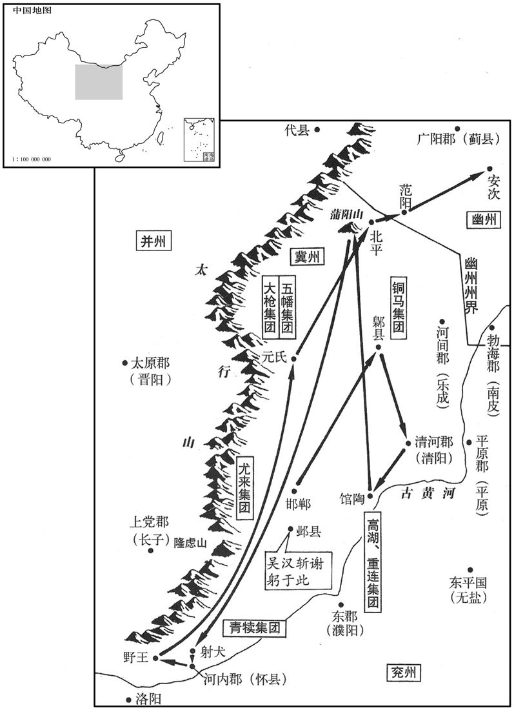
初，谢躬与萧王共灭王郎，数与萧王违戾，〔数，所角翻。〕常欲袭萧王，畏其兵强而止；虽俱在邯郸，遂分城而处，〔处，昌吕翻。〕然萧王〔【章：十二行本「王」下有「每」字；乙十一行本同；孔本同。】〕有以慰安之。躬勤于吏职，萧王常称之曰：「谢尚书，真吏也！」故不自疑。其妻知之，常戒之曰：「君与刘公积不相能，而信其虚谈，终受制矣！」躬不纳。既而躬率其兵数万还屯于邺。〔邺县，属魏郡。〕及萧王南击青犊，使躬邀击尤来于隆虑山，〔地理志：隆虑县，属河内郡。应劭曰：隆虑山，在县北，避殇帝名，改曰林虑。师古曰：虑，音庐。〕躬兵大败。萧王因躬在外，使吴汉与刺奸大将军岑彭袭据邺城。躬不知，轻骑还邺，汉等收斩之，其众悉降。
最初，谢躬与刘秀曾一同消灭王郎，但谢躬与刘秀多次冲突对立，谢躬时常想袭击刘秀，却因为畏惧刘秀兵力强大而不敢发动。两支部队，虽都在邯郸，却分城而处，然而刘秀不时对谢军慰问安抚。谢躬对于行政工作非常勤奋，刘秀经常称赞：“谢尚书是真正的官吏！”谢躬因此不再自己猜疑。他的妻子听说了这件事，经常告诫他：“你跟刘秀有积怨，势不两立，可是你却相信他那套虚言，最终会受到挟制的。”谢躬不接受。稍后，谢躬率领他的数万部队返回，屯驻邺城。等到刘秀南击青犊，让谢躬在隆虑山截击尤来，谢躬的军队大败。刘秀利用谢躬领兵在外，让吴汉与刺奸大将军岑彭袭击占据了邺城。谢躬不知道邺城的变化，率领轻装骑兵返回邺城，吴汉等把谢躬逮捕斩首，他的部队全部投降。
更始遣枉〔【章：十二行本「枉」作「柱」；乙十一行本同；孔本同。】〕功侯李〔【章：十二行本「李」作「张」；乙十一行本同；张校同。】〕宝、益州刺史李忠将兵万余人徇蜀、汉；公孙述遣其弟恢击宝、忠于绵竹，〔贤曰：绵竹，县名，属广汉郡，今益州县也；故城今在县东。〕大破走之。述遂自立为蜀王，都成都，〔述先居临邛，今徙成都。〕民、夷皆附之。
刘玄派柱功侯李宝、益州刺史李忠率军万余人，夺取汉中郡、蜀郡。公孙述派他的弟弟公孙恢在绵竹迎击李宝、李忠，大败敌军，李宝、李忠逃跑。公孙述于是自立为蜀王，建都成都。当地百姓和夷族全都归附于他。
冬，更始遣中郎将归德侯飒、大司马护军陈遵使匈奴，授单于汉旧制玺绶，〔王莽篡汉，易单于玺绶，事见三十七卷始建国二年。今复授之。飒，音立。玺，斯氏翻。绶，音受。〕因送云、当余亲属、贵人、从者还匈奴。〔天凤五年，莽胁云、当至长安。莽败，云、当亦死，所余亲属、贵人、从者，今送还匈奴。从，才用翻。〕单于舆骄，谓遵、飒曰：「匈奴本与汉为兄弟；匈奴中乱，〔师古曰：言中间之时也，读如本字，又音竹仲翻。〕孝宣皇帝辅立呼韩邪单于，故称臣以尊汉。今汉亦大乱，为王莽所篡，匈奴亦出兵击莽，空其边境，令天下骚动思汉；莽卒以败而汉复兴，亦我力也，当复尊我！」遵与相牚拒，〔卒，子恤翻。复，扶又翻。师古曰：牚，谓支拄也，音人庚翻，又丑庚翻。〕单于终持此言。
冬季，刘玄派中郎将归德侯刘飒、大司马护军陈遵出使匈奴，向单于颁发与汉朝旧制相同的印信，并就此把栾提云与他丈夫须卜当剩下的亲属、贵族、随从送回匈奴。匈奴单于栾提舆态度傲慢，对陈遵、刘飒说：“匈奴与汉朝本来是兄弟，匈奴中期发生内乱，孝宣皇帝帮助立呼韩邪单于，所以匈奴称臣，以尊敬汉朝。而今汉朝也有大乱，被王莽所篡夺，匈奴也曾出兵攻击王莽，使边境荡然一空，引起天下骚动，产生‘人心思汉’的后果，王莽最终失败，汉王朝复兴，这也是靠我们匈奴的力量，汉朝应该反过来尊我！”陈遵守住立场，进行辩驳，但单于始终坚持他的这种观点。
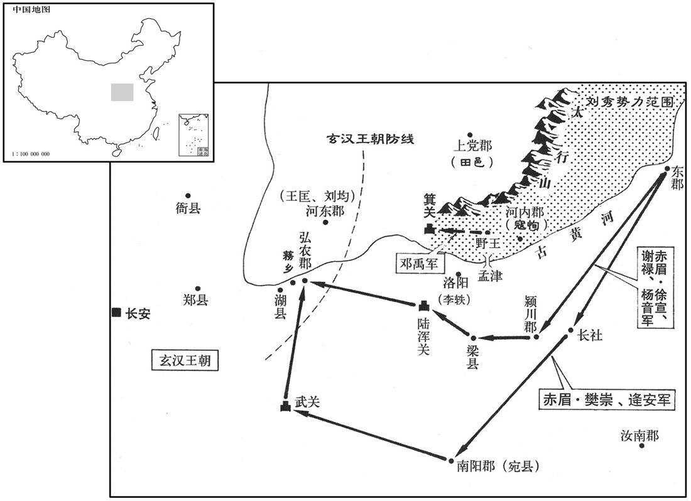
赤眉樊崇等将兵入颍川，分其众为二部，崇与逢安为一部，〔东观记曰：逢，音庞。〕徐宣、谢禄、杨音为一部。赤眉虽数战胜，〔数，所角翻。〕而疲弊厌兵，皆日夜愁泣，思欲东归；崇等计议，虑众东向必散，不如西攻长安。于是崇、安自武关、宣等从陆浑关〔贤曰：武关，在今商州上洛县东。文颖曰：弘农析县西百七十里有武关。前书曰：陆浑县有关，在今洛州伊阙县西南。地理志，陆浑县属弘农郡。师古曰：浑，音胡昆翻。〕两道俱入。更始使王匡、成丹与抗威将军刘均等分据河东、弘农以拒之。
赤眉首领樊崇等率军进入颍川，把他的部众分为两部分：樊崇、逢安率领一部分，徐宣、谢禄、杨音率领另一部分。赤眉军虽然不断打胜仗，但已精疲力尽，对战争感到厌倦，都日夜哭泣，想要回到东方。樊崇等商议，担心部众回到东方必然一哄而散，不如向西攻击长安。于是，樊崇、逢安从武 关，徐宣等从陆浑关，分两路一同向长安进军。刘玄命王匡、成丹和抗威将军刘均等人，分别驻防河东、弘农，堵截赤眉军。
萧王将北徇燕、赵，度赤眉必破长安，〔度，徒洛翻。〕又欲乘衅并关中而未知所寄，乃拜邓禹为前将军，中分麾下精兵二万人，遣西入关，令自选偏裨以下可与俱者。时朱鲔、李轶、田立、陈侨将兵号三十万，〔侨，音乔。〕与河南太守武勃共守洛阳；鲍永、田邑在并州。萧王以河内险要富实，〔河内，北有太行之险，南据河津之要。〕欲择诸将守河内者而难其人，〔贤曰：非其人不可，故难之。〕问于邓禹。邓禹曰：「寇恂文武备足，有牧人御众之才，非此子莫可使也！」乃拜恂河内太守，行大将军事。〔考异曰：袁纪：「邓禹初见王于邺，即言欲据河内」；至是又云：「更始武阴王李轶据洛阳，尚书谢躬据邺，各十余万众；王患焉，将取河内以迫之，谓邓禹曰：『卿言吾之有河内，犹高祖之有关中。关中非萧何，谁能使一方晏然，高祖无西顾之忧！吴汉之能，卿举之矣；复为吾举萧何。』禹曰：『寇恂才兼文武，有御众才，非恂莫可安河内也！』」按世祖既贰更始，先得河内、魏郡，因欲守之，以比关中，非本心造谋即欲指取河内也。今依范书为定。〕萧王谓恂曰：「昔高祖留萧何关中，吾今委公以河内；当给足军粮，率厉士马，防遏他兵，勿令北渡而已！」拜冯异为孟津将军，〔贤曰：孟，地名，古今以为津；在河内郡河阳县南门。〕统魏郡、河内兵于河上，以拒洛阳。萧王亲送邓禹至野王，禹既西，萧王乃复引兵而北。寇恂调骓粮，〔复，扶又翻。调，徒吊翻。骓，音侯，干食也。〕治器械以供军；〔治，直之翻。〕军虽远征，未尝乏绝。
刘秀将要向北夺取燕、赵，估计赤眉军必然攻破长安，所以又打算利用更始朝与赤眉军相争并吞关中，但不知道把任务交给谁好。于是任命邓禹当前将军，分出麾下精兵二万人，派他西入函谷关，并让他自己选择可以同行的偏将裨将及以下幕僚。这时，更始朝将领朱鲔、李轶、田立、陈侨率军号称三十万，与河南郡太守武勃共同守卫洛阳。另外两位将领鲍永、田邑则驻军并州。刘秀因河内郡地势险要，物产丰富而充实，打算在将领中物色一位守河内的人而难于物色到，便向邓禹询问。邓禹说：“寇恂文武全才，有统御众人的能力，除了他再没有合适的人。”刘秀于是任命寇恂当河内郡太守，并代理大将军职务。他对寇恂说：“从前，高祖把关中交给萧何，而今我把河内交给你。应当保证军粮供应，训练兵马，阻挡其他军队，不要让他们北渡黄河。”又任命冯异当孟津将军，在黄河之畔统辖魏郡、河内郡的军队，以抗拒洛阳方面的进攻。刘秀亲自送邓禹到野王。邓禹向西出发以后，刘秀才率军北上。寇恂征集粮食，制造武器，以供应军需。大军虽然远征，物资却从不匮乏。
本段人物：萧何
隗崔、隗义谋叛归天水；隗嚣恐并及祸，乃告之。更始诛崔、义，以嚣为御史大夫。〔武帝元鼎三年，置天水郡。秦州记云：郡前湖水，冬夏无增减，因以名焉。〕
隗崔、隗义密谋背叛更始朝，返回天水。隗嚣恐怕事情败露而自己被牵连，于是向朝廷检举。刘玄诛杀隗崔、隗义，任命隗嚣当御史大夫。
梁王永据国起兵，招诸郡豪桀；沛人周建等并署为将帅，攻下济阴、山阳、沛、楚、淮阳、汝南，凡得二十八城。〔将，即亮翻。帅，所类翻。济，子礼翻。〕又遣使拜西防贼帅山阳佼强为横行将军，〔贤曰：西防，县名；故城在今宋州单父县北。佼，音绞，姓也。周大夫原伯佼之后。姓谱曰：春秋绞国，即佼也，后改从「人」；汉有佼强。杜佑曰：佼，音鹈。余考两汉志无西防县。〕东海贼帅董宪为翼汉大将军，琅邪贼帅张步为辅汉大将军，督青、徐二州，与之连兵，遂专据东方。
梁王刘永，凭依他的封国起兵，招揽各郡英雄豪杰。沛人周建等都被任命当将帅，攻陷济阴、山阳、沛、楚、淮阳、汝南等地，共占领二十八城。又派遣使者任命西防贼首领山阳人佼强当横行将军，东海贼首领董宪当翼汉大将军，琅邪贼首领张步当辅汉大将军，监管青州、徐州两州，将军队合并，于是在东方称霸。
邔人秦丰起兵于黎丘，攻得邔、宜城等十余县，有众万人，自号楚黎王。〔按王莽之末，秦丰巳起兵矣。通鉴书于上卷地皇二年。邔、宜城二县，属南郡。孟康曰：邔，音忌。师古曰：邔，音其。刘昭曰：邔有黎丘城。贤曰：习凿齿襄阳记曰：秦丰，黎丘乡人。黎丘，楚地，故称楚黎王。黎丘故城，在今襄州率道县北。杜佑曰：襄州宜城县，旧率道也。水经注：黎丘在中庐县西北，沔水径其西。〕
人秦丰在黎丘起兵，攻陷县、宜城等十余县，有部众一万人，自称楚黎王。
汝南田戎攻陷夷陵，〔贤曰：夷陵，县名，属南郡；有夷山，故曰夷陵；今峡州县；故城在今县西北。水经注：吴改夷陵为西陵。〕自称扫地大将军；转寇郡县，众数万人。
汝南人田戎攻陷夷陵，自称扫地大将军，转战劫掠各郡县，有部众数万人。
公元25年 · 25年 · 本卷无单列记事
胡注本未在本卷单列这一年记事；不能据此认为当年没有历史事件。
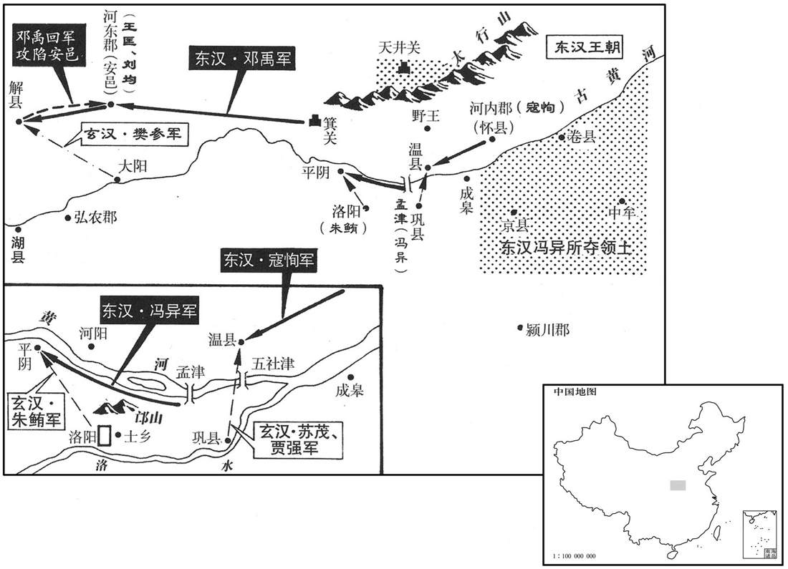
本年形势与背景参考图
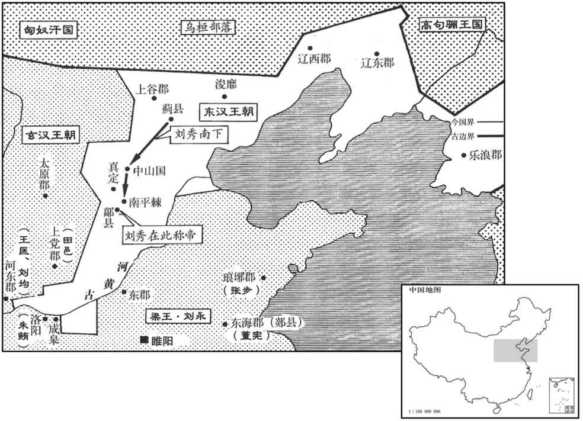
本年形势与背景参考图
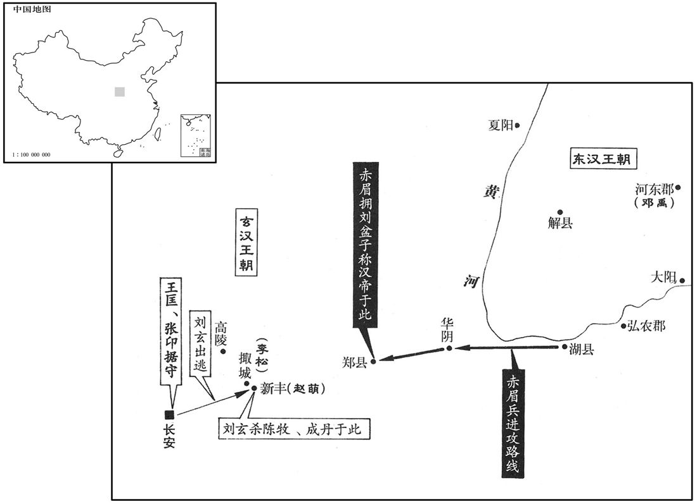
本年形势与背景参考图
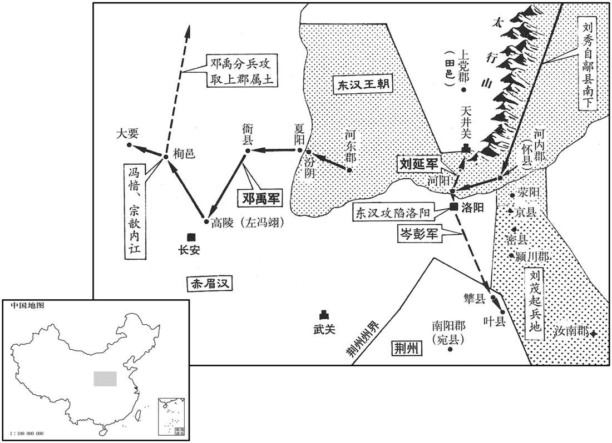
本年形势与背景参考图
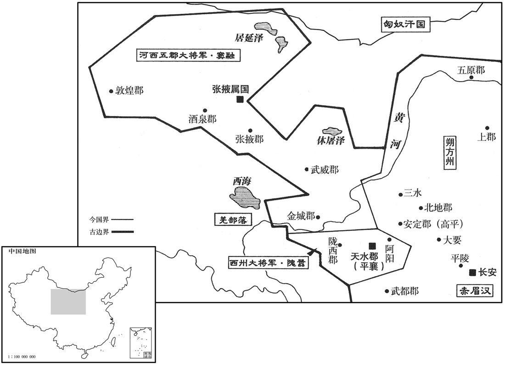
本年形势与背景参考图
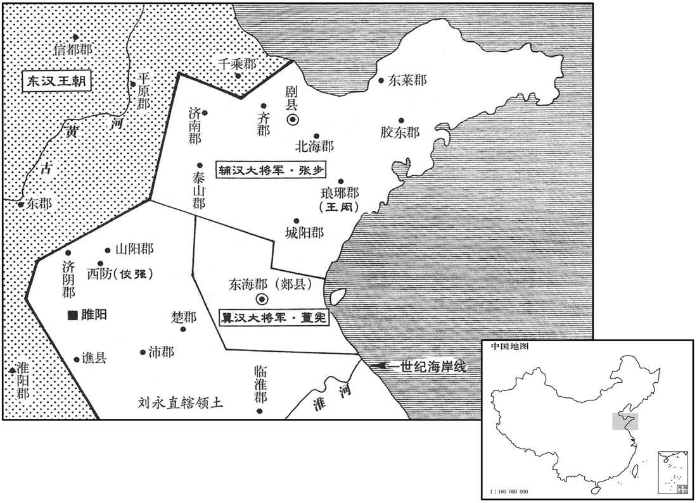
本年形势与背景参考图
译本中未与胡注本可靠对应的内容
以下另列供核对版本差异，不并入胡注本正文。
译本所附古文
[1]春，正月，方望与安陵人弓林共立前定安公婴为天子，聚党数千人，居临泾。更始遣丞相松等击破，皆斩之。
译本白话
春季，正月，方望和安陵人弓林共同拥立前定安公刘婴当皇帝，聚集党徒数千人，占据临泾。更始皇帝刘玄派遣丞相李松讨伐方望等，将他们全部斩杀。
译本所附古文
[2]邓禹至箕关，击破河东都尉，进围安邑。
译本白话
邓禹的军队进抵箕关，打败了河东郡都尉的军队，进军包围了安邑县。
译本所附古文
[3]赤眉二部俱会弘农。更始遣讨难将军苏茂拒之；茂军大败。赤眉众遂大集，乃分万人为一营，凡三十营。三月，更始遣丞相松与赤眉战于乡，松等大败，死者三万余人；赤眉遂转北至湖。
译本白话
赤眉军的两支队伍在弘农会师。更始皇帝刘玄派遣讨难将军苏茂抵挡，苏茂的军队大败。赤眉军于是大为集结，分成一万人为一营，共计三十营。三月，刘玄派遣丞相李松同赤眉军在乡展开大战，李松等大败，死三万余人，于是赤眉军向北推进到湖城。
译本所附古文
[4]蜀郡功曹李熊说公孙述宜称天子。夏，四月，述即帝位，号成家，改元龙兴；李熊为大司徒，述弟光为大司马，恢为大司空。越任贵据郡降述。
译本白话
蜀郡功曹李熊劝说蜀王公孙述应当称皇帝。夏季，四月，公孙述在成都即帝位，号称“成家”，改年号为“龙兴”。公孙述任命李熊为大司徒，任命弟弟公孙光为大司马，公孙恢为大司空。越人任贵献郡降附公孙述。
译本所附古文
[5]萧王北击尤来、大枪、五幡于元氏，追至北平，连破之；又战于顺水北，乘胜轻进，反为所败。王自投高岸，突骑王丰下马授王，王仅而得免；散兵归保范阳。军中不见王，或云已杀，诸将不知所为，吴汉曰：“卿曹努力！王兄子在南阳，何忧无主！”众恐惧，数日乃定。贼虽战胜，而惮王威名，夜，遂引去。大军复进至安次，连战，破之。贼退入渔阳，所过虏掠。强弩将军陈俊言于王曰：“贼无辎重，宜令轻骑出贼前，使百姓各自坚壁以绝其食，可不战而殄也。”王然之，遣俊将轻骑驰出贼前，视人保壁坚完者，敕令固守；放散在野者，因掠取之。贼至，无所得，遂散败。王谓俊曰：“困此虏者，将军策也。”
译本白话
萧王刘秀率军北进，在元氏攻打尤来、大枪、五幡等几支贼寇军队，一直追到北平，连续打败贼军，又在顺水河的北岸交战。刘秀乘胜率军冒进，反被贼军打败。刘秀自己从悬崖上跳下，骑兵突击队的王丰把战马给了刘秀，刘秀仅得免死。败兵退归范阳据守。军中见不到刘秀，有人说刘秀已经被杀，将领们不知如何是好。吴汉说：“大家努力！大王哥哥的儿子就在南阳，我们何必忧愁没有主君！”大家感到恐慌，几天后才安定下来。贼军虽然战胜了刘秀，但害怕刘秀的威名，于是乘夜撤走。刘秀的军队再次进军，到达安次，接连进攻，打败贼军。贼军撤退进入渔阳郡，所到之处，大肆掳掠。强弩将军陈俊向刘秀进言：“贼寇没有辎重 ，应该派轻骑兵到贼寇的前面，让沿途的百姓各自坚壁清野，以断绝贼寇的粮食。可以不用攻打，贼寇自会消灭。”刘秀赞同，派遣陈俊率轻骑兵飞奔至贼军前面，对那些坚固完整的壁垒，则下令固守；对那些分散在郊野的，则乘机掠取到手。贼寇到达之后，一无所得，于是溃散。刘秀对陈俊说：“使这群贼寇陷入困境，是靠将军您的策略。”
译本所附古文
[6]冯异遗李轶书，为陈祸福，劝令归附萧王；轶知长安已危，而以伯升之死，心不自安，乃报书曰：“轶本与萧王首谋造汉，令轶守洛阳，将军镇孟津，俱据机轴，千载一会，思成断金。唯深达萧王，愿进愚策以佐国安民。”轶自通书之后，不复与异争锋，故异得北攻天井关，拔上党两城，又南下河南成皋以东十三县，降者十余万。武勃将万余人攻诸畔者，异与战于士乡下，大破，斩勃；轶闭门不救。异见其信效，具以白王。王报异曰：“季文多诈，人不能得其要领。今移其书告守、尉当警备者。”众皆怪王宣露轶书；朱鲔闻之，使人剌杀轶，由是城中乖离，多有降者。
译本白话
冯异给更始将领舞阳王李轶写信，为他陈述利害，劝他归附刘秀。李轶知道长安已危，却因刘之死而心不自安，于是回信给冯异说：“我本来同刘秀最早合谋重建汉王朝。现在我守洛阳，你守孟津，全都据于战略要地。这是千载难逢的良机，你我二人同心，力可断金。请你转达萧王，我甘愿进献愚策，帮助他定国安民。”李轶自从和冯异互通书信之后，便不再同冯异交兵，因此冯异能够向北进攻天井关，攻取上党地区的两个城，又南下，攻取河南成皋以东的十三个县，收受降军十余万人。更始朝将领武勃率领一万余人攻打叛变者，冯异和武勃在士乡交战，大破武勃军，斩武勃。李轶紧闭城门，不予救助。冯异见劝降的书信奏效，一五一十地向刘秀禀报。刘秀回复冯异说：“李轶诡诈多端，一般人不知道他到底是怎么想的，现在把他给你的信转送给应当警备的各郡太守和都尉。”大家全都奇怪刘秀为什么要泄露李轶的书信。更始朝将领朱鲔听说了这件事，派人刺杀了李轶。这样一来，洛阳城中离心离德，有不少人投降。
朱鲔闻王北征而河内孤，乃遣其将苏茂、贾强将兵三万余人渡巩河，攻温；鲔自将数万人攻平阴以缀异。檄书至河内，寇恂即勒军驰出，并移告属县，发兵会温下。军吏皆谏曰：“今洛阳兵渡河，前后不绝；宜待众军毕集，乃可出也。”恂曰：“温，郡之藩蔽，失温则郡不可守。”遂驰赴之。旦日，合战，而冯异遣救及诸县兵适至，恂令士卒乘城鼓噪，大呼言曰：“刘公兵到！”苏茂军闻之，陈动；恂因奔击，大破之。冯异亦渡河击朱鲔，鲔走；异与恂追至洛阳，环城一匝而归。自是洛阳震恐，城门昼闭。
朱鲔得知刘秀大军北征而河内势孤力单，于是派遣部将苏茂、贾强领兵三万余人渡过巩河，进攻温县。朱鲔亲自领兵数万人进攻平阴，以牵制冯异的军队。文书传到河内，寇恂马上集结军队急速出发，并传令下属各县发兵到温县城下会师。军吏们全都劝阻说：“眼下洛阳大军渡过巩河，前后不绝；我们应该等到各县军队全都聚集，才能够出战。”寇恂说：“温县是本郡的屏障，如果温县陷落，那么郡城就守不住。”于是率军驱驰迎敌。第二天，寇恂和敌军交战，而此时冯异派出的救兵和各县的军队恰好赶到。寇恂命士兵在城上呐喊，大声呼叫：“刘公大军来了！”苏茂的部众听到后，阵列骚动。寇恂乘势冲击，大破敌军。冯异也率军渡过巩河袭击朱鲔的军队，朱鲔逃走。冯异和寇恂追到洛阳，绕城一周而还。从此洛阳全城震恐，白天也紧闭城门。
异、恂移檄上状，诸将入贺，因上尊号。将军南阳马武先进曰：“大王虽执谦退，奈宗庙社稷何！宜先即尊位，乃议征伐。今此谁贼而驰骛击之乎？”王惊曰：“何将军出此言？可斩也！”乃引军还蓟。复遣吴汉率耿、景丹等十三将军追尤来等，斩首万三千余级，遂穷追至浚靡而还。贼散入辽西、辽东，为乌桓、貊人所钞击略尽。
译本所附古文
冯异、寇恂发送文书呈报战果，将领们进帐祝贺，乘机请刘秀称帝。将军南阳人马武首先说：“大王您虽然谦恭退让，但国家宗庙社稷托付给谁？您应先即帝位，然后再讨论征讨的事。像现在名号未正，东闯西杀，到底谁是贼呢？”刘秀很吃惊，说：“将军怎么说出这种话？够杀头的罪了！”于是率军返回蓟县，又派吴汉率领耿、景丹等十三位将军追击尤来等贼军，斩首一万三千余人，紧接着穷追到浚靡县才返回。贼军散入辽西、辽东，被乌 桓、貊人抢掠击杀，几乎死尽。 都护将军贾复与五校战于真定，复伤创甚；王大惊曰：“我所以不令贾复别称者，为其轻敌也。果然，失吾名将！闻其妇有孕，生女邪，我子娶之；生男邪，我女嫁之；不令其忧妻子也。”复病寻愈，追及王于蓟，相见甚欢。 都护将军贾复同五校的贼军在真定交战，贾复身负重伤。刘秀大惊，说：“我所以不让贾复率军独当一面，是因为他轻敌。果然如此，我丧失了一员名将！听说他妻子怀有身孕，如果生下女孩儿，将来我的儿子娶她为妻；如果生男孩儿，将来我的女儿嫁给他。不要让他为妻子儿女担忧。”贾复的伤势不久痊愈，在蓟县追上刘秀，两人见面非常高兴。
译本白话
还至中山，诸将复上尊号；王又不听。行到南平棘，诸将复固请之；王不许。诸将且出，耿纯进曰：“天下士大夫，捐亲戚，弃土壤，从大王于矢石之间者，其计固望攀龙鳞，附凤翼，以成其所志耳。今大王留时逆众，不正号位，纯恐士大夫望绝计穷，则有去归之思，无为久自苦也。大众一散，难可复合。”纯言甚诚切，王深感曰：“吾将思之 。”
刘秀回到中山县，将领们再次请求他称帝，他再次拒绝。大军走到南平棘，将领们再次坚决恳请，他仍然不答应。将领们将要退出，耿纯进谏说：“天下的士大夫舍弃亲属，背井离乡，在弹雨之中跟随大王，他们一心向往的，本是攀龙附凤，以成就志向。现在您拖延时间，违背众意，不确定尊号，我恐怕士大夫会失去希望，无计可施，从而产生退归故里的想法，不会长期忍耐下去。众人一散，就很难再聚合到一处了。”耿纯的话非常诚恳殷切，刘秀十分感谢，说：“我将予以考虑。”
行至，召冯异，问四方动静。异曰：“更始必败，宗庙之忧在于大王，宜从众议！”会儒生强华自关中奉《赤伏符》来诣王曰：“刘秀发兵捕不道，四夷云集龙斗野，四七之际火为主。”群臣因复奏请。六月，己未，王即皇帝位于南；改元，大赦。
刘秀的军队走到县，刘秀召见冯异打听各方军情。冯异说：“更始必败，忧虑宗庙的大任在您身上，您应当听从大家的建议。”这时，恰好儒生强华从关中拿着《赤伏符》来晋见刘秀，符上说：“刘秀发兵惩奸贼，四方云集龙斗野，四七二八汉当立。”群臣因此再次奏请。六月，己未（二十二日），刘秀在县之南即皇帝位，改年号，大赦天下。
译本所附古文
[7]邓禹围安邑，数月未下，更始大将军樊参将数万人渡大阳，欲攻禹；禹逆击于解南，斩之。王匡、成丹、刘均合军十余万，复共击禹，禹军不利。明日，癸亥，匡等以六甲穷日，不出，禹因得更治兵。甲子，匡悉军出攻禹；禹令军中毋得妄动，既至营下，因传发诸将，鼓而并进，大破之。匡等皆走，禹追斩均及河东太守杨宝，遂定河东，匡等奔还长安。
译本白话
邓禹率军包围安邑，经过几个月也未能攻下。更始大将军樊参率领数万人从大阳渡河，准备攻打邓禹。邓禹在解县南迎击，斩杀樊参。王匡、成丹、刘均纠集十余万军队，再次一起攻打邓禹，邓禹军交战失利。第二天，癸亥（二十六日），王匡等因为当天是六十甲子记日的最后一天，所以闭门不出。而邓禹因此得以整顿部署军队。甲子（二十七日），王匡等全军出击攻打邓禹，邓禹下令军队不得轻举妄动，等到王匡军逼进营垒后，才传令各将领，击鼓并进，大破敌军。王匡等全都逃跑，邓禹追击，斩杀了刘均以及河东太守杨宝，于是平定河东。王匡等逃回长安。
张与诸将议曰：“赤眉旦暮且至，见灭不久，不如掠长安，东归南阳；事若不集，复入湖池中为盗耳！”乃共入，说更始；更始怒不应，莫敢复言。更始使王匡、陈牧、成丹、赵萌屯新丰，李松军，以拒赤眉。张、廖湛、胡殷、申屠建与隗嚣合谋，欲以立秋日时共劫更始，俱成前计。更始知之，托病不出，召张等入，将悉诛之；唯隗嚣称疾不入，会客王遵、周宗等勒兵自守。更始狐疑不决，、湛、殷疑有变，遂突出；独申屠建在，更始斩建，使执金吾邓晔将兵围隗嚣第。、湛、殷勒兵烧门，入战宫中，更始大败；嚣亦溃围，走归天水。明旦，更始东奔赵萌于新丰。更始复疑王匡、陈牧、成丹与张等同谋，乃并召入；牧、丹先至，即斩之。王匡惧，将兵入长安，与张等合。
张同将领们商议：“赤眉军早晚就会到达，我们不久就会被消灭。不如抢掠了长安，向东逃回南阳。事情如果办不成，我们再到江湖中，重新做强盗！”于是一同晋见，说服刘玄。刘玄愤怒而不发一言，没有人敢再说话。刘玄命王匡、陈牧、成丹、赵萌驻屯新丰，命宰相李松屯兵城，以抗拒赤眉军。张、廖湛、胡殷、申屠建与隗嚣合谋，准备借立秋这一天杀牲祭宗庙的时候，共同劫持刘玄，实现先前的计划。刘玄得知后，称病不出门。他召张等进宫，准备全都斩首。当时只有隗嚣自称有病没有进宫，召集他的宾客王遵、周宗等率军士自守。刘玄犹疑不决。张、廖湛、胡殷怀疑有变化，于是冲出宫去。只有申屠建还留在宫中，刘玄斩杀了申屠建，命执金吾邓晔领兵包围隗嚣的宅第。张、廖湛、胡殷率兵烧毁宫门，杀入宫中，刘玄大败。隗嚣也突破包围，逃回天水。第二天早晨，刘玄出皇宫向东投奔在新丰屯兵的赵萌。刘玄又怀疑王匡、陈牧、成丹和张等是同谋，于是一块儿召见他们。陈牧、成丹先到，立刻被斩首。王匡恐惧，率军进入长安，与张等人会合。
译本所附古文
[8]赤眉进至华阴，军中有齐巫，常鼓舞祠城阳景王，巫狂言 ：“景王大怒曰：‘当为县官，何故为贼！’”有笑巫者辄病，军中惊动。方望弟阳说樊崇等曰：“今将军拥百万之众，西向帝城，而无称号，名为群贼，不可以久；不如立宗室，挟义诛伐，以此号令，谁敢不从！”崇等以为然，而巫言益甚。前至郑，乃相与议曰：“今迫近长安，而鬼神若此，当求刘氏共尊立之。”
译本白话
赤眉军进抵华阴，随军有一位齐地的巫师，常常击鼓舞蹈，祭祀城阳景王刘章。巫师口出狂言：“景王大怒说：‘应当做天子，为什么当盗贼！’”凡是嘲笑巫师的人，都患了病，为此全军震惊。方望的弟弟方阳劝说樊崇等人：“现在将军拥有百万大军，向西面对帝王都城，却没有称号，被人称作盗贼，不可能长期维持下去。不如拥立一位刘氏宗室，挟天子的名义诛杀讨伐，以此号令天下，谁敢不服从！”樊崇等认为说得很对，而巫师的狂言也越来越厉害。向前进军抵达郑县，于是共同商议说：“现在已经逼近长安，而鬼神的旨意是这样，应该寻求一位刘氏宗室，共同尊他为皇帝。”
先是，赤眉过式，掠故式侯萌之子恭、茂、盆子三人自随。恭少习《尚书》，随樊崇等降更始于洛阳，复封式侯，为侍中，在长安。茂与盆子留军中，属右校卒史刘侠卿，主牧牛。及崇等欲立帝，求军中景王后，得七十余人，唯茂、盆子及前西安侯孝最为近属。崇等曰：“闻古者天子将兵称上将军”，乃书札为符曰“上将军”。又以两空札置笥中，于郑北设坛场，祠城阳景王，诸三老、从事皆大会；列盆子等三人居中立，以年次探札，盆子最幼，后探，得符；诸将皆称臣，拜。盆子时年十五，被发徒跣，敞衣赭汗，见众拜，恐畏欲啼。茂谓曰：“善臧符！”盆子即啮折，弃之。以徐宣为丞相，樊崇为御史大夫，逢安为左大司马，谢禄为右大司马，其余皆列卿、将军。盆子虽立，犹朝夕拜刘侠卿，时欲出从牧见戏；侠卿怒止之，崇等亦不复候视也。
早先，赤眉军经过式县，劫持故式侯刘萌的儿子刘恭、刘茂、刘盆子，让三人随军。刘恭幼时学习《尚书》，后来跟从樊崇等在洛阳投降更始皇帝刘玄，重新封为式侯，担任侍中，后到长安。刘茂和刘盆子留在军中，归右校卒史刘侠卿管辖，负责放牛。等到樊崇等想要拥立皇帝时，在军中寻找景王刘章的后代，找到七十余人，其中只有刘茂、刘盆子以及前西安侯刘孝血统最为亲近。樊崇等人说：“听说古时候，天子亲自领兵，称为上将军。”于是用一片木简做符，上写“上将军”三个字，又把两片未写字的木简也放在竹筒中。在郑县北面修筑坛场，祭祀城阳景王刘章，各位三老、从事全都聚会于此。请刘盆子等三人居台中排列站立，按照长幼顺序抽签。刘盆子年纪最小，最后抽，抽中了符。将领们全都向刘盆子称臣叩拜。刘盆子当时十五岁，披散着头发，光着双脚，穿着破衣服，紫涨着脸，浑身冒汗。他看见众将跪拜，惊恐得要哭出来。刘茂对他说：“把你的符藏好！”刘盆子却立即把木简放到口中咬断，扔掉。他任命徐宣为丞相，樊崇为御史大夫，逢安为左大司马，谢禄为右大司马，其余的全被任命为卿、将军。刘盆子虽被立为皇帝，但每天早晚还要叩拜刘侠卿。他时常想到外面去和牧童们嬉戏，刘侠卿愤怒地制止他。樊崇等人也不再来问候探视。
译本所附古文
[9]秋，七月，辛未，帝使使持节拜邓禹为大司徒，封侯、食邑万户；禹时年二十四。又议选大司空，帝以《赤伏符》曰“王梁主卫作玄武”，丁丑，以野王令王梁为大司空。又欲以谶文用平狄将军孙咸行大司马，众咸不悦。壬午，以吴汉为大司马。
译本白话
秋季，七月辛未（初五），汉光武帝刘秀派使者持符节任命邓禹当大司徒，封为侯，食邑一万户。当时邓禹二十四岁。又商议选任大司空，刘秀凭《赤伏符》上说的“王梁主卫作玄武”，丁丑（十一日），任命野王县令王梁为大司空。刘秀又打算按照谶文中的话任命平狄将军孙咸代理大司马，对此大家都不高兴。壬午（十六日），任命吴汉为大司马。
初，更始以琅邪伏湛为平原太守；时天下兵起，湛独晏然，抚循百姓。门下督谋为湛起兵、湛收斩之；于是吏民信向，平原一境赖湛以全。帝征湛为尚书，使典定旧制。又以邓禹西征，拜湛为司直，行大司徒事；车驾每出征伐，常留镇守。
起初，刘玄以琅邪人伏湛为平原郡太守。当时各地起兵，只有伏湛安抚百姓，安然不动。门下督为伏湛策划起兵的事，伏湛将他逮捕处斩。因此官民信赖向往伏湛，整个平原境内仗着伏湛而保全下来。刘秀征召伏湛当尚书，让他负责整理旧有的典章制度。又因邓禹率军西征，任命伏湛当司直，代理大司徒职务。刘秀每次外出亲征，往往留伏湛镇守。
译本所附古文
[10]邓禹自汾阴渡河，入夏阳，更始左辅都尉公乘歙引其众十万与左冯翊兵共拒禹于衙；禹复破走之。
译本白话
邓禹从汾阴渡过黄河，进入夏阳。更始朝左辅都尉公乘歙率领部众十万人和左冯翊的军队在衙县共同抗拒邓禹。邓禹再次打败敌人，公乘歙等逃走。
宗室刘茂聚众京、密间，自称厌新将军，攻下颍川、汝南，众十余万人。帝使骠骑大将军景丹、建威大将军耿、强弩将军陈俊攻之；茂来降，封为中山王。
刘氏宗室刘茂在京县和密县聚集兵众，自称厌新将军，攻下颖川、汝南，部众达十余万人。刘秀派骠骑大将军景丹、建威大将军耿、强弩将军陈俊攻打刘茂。刘茂前来投降，刘秀封他为中山王。
译本所附古文
[11]己亥，帝幸怀，遣耿、陈俊军五社津，备荥阳以东；使吴汉率建议大将军朱祜等十一将军围朱鲔于洛阳。八月，进幸河阳。
译本白话
己亥（二十九日），刘秀来到怀县，派遣耿、陈俊在五社津屯驻，防备荥阳以东的变化。命吴汉率领建议大将军朱祜等十一位将军包围朱鲔镇守的洛阳。八月，刘秀前往河阳。
译本所附古文
[12]李松自引兵还，从更始与赵萌共攻王匡、张于长安。连战月余，匡等败走，更始徙居长信宫。
译本白话
更始朝宰相李松从城领兵返回，跟从刘玄与赵萌一同进攻王匡、张，战于长安。一连打了一个多月，王匡等败逃，刘玄迁居到长信宫。
赤眉至高陵，王匡、张等迎降之，遂共连兵进攻东都门。李松出战，赤眉生得松；松弟况为城门校尉，开门纳之。九月，赤眉入长安；更始单骑走。从厨城门出。式侯恭以赤眉立其弟，自系诏狱；闻更始败走，乃出，见定陶王祉，祉为之除械，相与从更始于渭滨。右辅都尉严本，恐失更始为赤眉所诛，即将更始至高陵，本将兵宿卫，其实围之。更始将相皆降赤眉，独丞相曹竟不降，手剑格死。
赤眉军到达高陵，王匡、张等迎接并投降赤眉，于是共同连兵攻打长安东都门。李松出战，赤眉军生擒李松。李松的弟弟李况担任城门校尉，他打开城门把赤眉军放了进来。九月，赤眉军进入长安，刘玄一个人骑马从厨城门逃出长安。刘玄所封的式侯刘恭因为赤眉军拥立他的弟弟刘盆子做皇帝，就自己绑缚起来，囚禁诏狱。听说刘玄兵败逃跑，才出狱，去见定陶王刘祉。刘祉替他除去身上的刑具，一起到渭水河畔跟随刘玄。右辅都尉严本害怕刘玄被赤眉军所杀，就挟持刘玄到高陵，严本亲自率兵守卫，实际是把刘玄包围起来。刘玄的文武官员全都投降了赤眉军，只有丞相曹竟不降，手持宝剑格斗而杀。
译本所附古文
[13]辛未，诏封更始为淮阳王；吏民敢有贼害者，罪同大逆；其送诣吏者封列侯。
译本白话
辛未（初六），刘秀下诏封刘玄为淮阳王。诏书说，无论官吏或百姓敢有杀害刘玄的，罪与大逆相同；有把刘玄送到官府的，封为侯爵。
译本所附古文
[14]初，宛人卓茂，宽仁恭爱，恬荡乐道，雅实不为华貌，行己在于清浊之间，自束发至白首，未尝与人有争竞，乡党故旧，虽行能与茂不同，而皆爱慕欣欣焉。哀、平间为密令，视民如子，举善而教，口无恶言，吏民亲爱，不忍欺之。民尝有言部亭长受其米肉遗者，茂曰：“亭长为从汝求乎，为汝有事嘱之而受乎，将平居自以恩意遗之乎？”民曰：“往遗之耳。”茂曰：“遗之而受，何故言邪？”民曰：“窃闻贤明之君，使民不畏吏，吏不取民。今我畏吏，是以遗之；吏既卒受，故来言耳。”茂曰：“汝为敝民矣！凡人所以群居不乱，异于禽兽者，以有仁爱礼义，知相敬事也。汝独不欲修之，宁能高飞远走，不在人间邪！吏顾不当乘威力强请求耳。亭长素善吏，岁时遗之，礼也。”民曰：“苟如此，律何故禁之？”茂笑曰：“律设大法，礼顺人情。今我以礼教汝，汝必无怨恶；以律治汝，汝何所措其手足乎！一门之内，小者可论，大者可杀也。且归念之！”初，茂到县，有所废置，吏民笑之，邻城闻者皆蚩其不能。河南郡为置守令；茂不为嫌，治事自若。数年，教化大行，道不拾遗；迁京部丞，密人老少皆涕泣随送。及王莽居摄，以病免归。上即位，先访求茂，茂时年七十余。甲申，诏曰：“夫名冠天下，当受天下重赏。今以茂为太傅，封褒德侯。”
译本白话
起初，宛城人卓茂宽厚仁义而谦恭爱人，性情恬淡坦荡而乐守圣贤之道，朴实无华而不修饰，行动在清浊之间而不偏激。从少年到白发的老年，从未跟人争执过，家乡的亲朋故友虽然品行才干与卓茂不同，却全都很爱慕他。卓茂在西汉哀帝、平帝时当密县县令，把老百姓看做自己的儿女，推行仁政教化百姓，口无恶言，官民亲近热爱他，不忍心欺骗他。曾经有一个人上告说，卓茂属下的亭长接受了他所送的米和肉。卓茂说：“是亭长跟你要的吗，还是你有事托他而送给他，还是平时自有恩惠情义而送给他的呢？”那个人说：“是我自己送给他的。”卓茂说：“是你自己送去他接受的，为什么还要上告呢？”那个人说：“我听说贤明的君主让老百性不惧怕官吏，官吏也不向老百姓索取东西。而现在我畏惧官吏，所以送东西给他。而他最终接受了，所以我来报告。”卓茂说：“你是个坏百姓！人所以聚集在一起有秩序地生活而不同于禽兽的原因，就在于人有仁爱礼义，懂得互相尊重。而你偏偏想不在乎这些，难道你能够远走高飞，脱离人间吗？官吏固然不应当凭权力强求索取。亭长向来是一位善良的官吏，每年按时送他一点东西，是符合礼的。”那个人说：“如果这样，法律为什么禁止呢？”卓茂笑着说：“法律设立行为的规范，礼则顺应人之常情。现在我用礼教诲你，你一定没有怨恨恶感；如果我用法律惩罚你，你将有什么举动呢？同一个门内，罪过小的可以论罪，罪过大的可以杀头。你且回去想想吧！”当初，卓茂到密县上任后，有废除的事项，也有新设立的措施。官民嘲笑他，邻城的人听说以后都叽笑他没有才干。河南郡为他设置了一位县令。卓茂并没有感到厌恶不满，照常办公。几年以后，他所推行的教化形成风气，以致路不拾遗。后卓茂升迁当京部丞，密县的老少全流着眼泪，一路跟随着为他送行。等到王莽摄政，卓茂因病辞官，回归故里。刘秀称帝后，首先寻访卓茂的下落。卓茂当时已七十余岁。九月甲申（十九日），刘秀下诏书：“名誉满天下，应当受最重的奖赏。现任命卓茂当太傅，封为褒德侯。”
臣光曰：孔子称“举善而教不能则劝。”是以舜举皋陶，汤举伊尹，而不仁者远，有德故也。光武即位之初，群雄竞逐，四海鼎沸，彼摧坚陷敌之人，权略诡辩之士，方见重于世，而独能取忠厚之臣，旌循良之吏，拔于草莱之中，实诸群公之首，宜其光复旧物，享祚久长，盖由知所先务而得其本原故也。
臣司马光曰：孔子说：“推举善行，教育能力弱的人，人们就能互相劝勉。”所以，虞舜推荐皋陶，商汤推荐伊尹，邪恶不仁的人远去，是因为这两人品德高尚的缘故。光武帝刚刚即位，群雄竞逐，四海之内像滚水般沸腾。那些冲锋陷阵的人，有权谋而善辩的人，正为世人所敬重。而唯独光武帝能起用忠厚之臣，表彰奉公守法的官吏，从社会最底层选拔人才，安排在公卿首位。他所以能光复汉室，长治久安，是由于他知道首先必须做什么才能达到根本目的的缘故。
译本所附古文
[15]诸将围洛阳数月，朱鲔坚守不下。帝以廷尉岑彭尝为鲔校尉，令往说之。鲔在城上；彭在城下，为陈成败。鲔曰：“大司徒被害时，鲔与其谋，又谏更始无遣萧王北伐，诚自知罪深，不敢降！”彭还，具言于帝。帝曰：“举大事者不忌小怨。鲔今若降，官爵可保，况诛罚乎！河水在此，吾不食言！”彭复往告鲔，鲔从城上下索曰：“必信，可乘此上。”彭趣索欲上，鲔见其诚，即许降。辛卯，朱鲔面缚，与岑彭俱诣河阳。帝解其缚，召见之，复令彭夜送鲔归城。明旦，与苏茂等悉其众出降。拜鲔为平狄将军，封扶沟侯；后为少府，传封累世。
译本白话
刘秀的将领们包围洛阳达几个月，因朱鲔坚守而未能攻下。刘秀因为廷尉岑彭曾经当过朱鲔的校尉，所以派岑彭前去说服朱鲔。朱鲔在城上，岑彭在城下向朱鲔陈述利害得失。朱鲔说：“大司徒刘被害时，我曾经参与谋 划，又曾劝更始不要派遣萧王北伐。我确知自己罪孽深重，不敢投降。”岑彭返回，把这些话向刘秀禀报。刘秀说：“做大事的人不计较小怨。朱鲔现在如果投降，可保全官职和爵位，怎么能够治罪呢？有黄河水在此作证，我决不食言！”岑彭又前去向朱鲔转告刘秀的话。朱鲔从城上垂下大绳子，说：“如果你说的确实是真的，请用绳子上城。”岑彭向前准备攀登，朱鲔看到他的诚意，就答应投降。九月辛卯（二十六日），朱鲔把自己反绑起来，和岑彭一起到河阳。刘秀解下他身上捆绑的绳索，接见了他，又让岑彭连夜送他返回洛阳城。第二天早晨，朱鲔和苏茂等带领全体官兵出城投降。刘秀任命朱鲔为平狄将军，封扶沟侯。朱鲔后当少府，封爵世代相传。
帝使侍御史河内杜诗安集洛阳。将军萧广纵兵士暴横，诗敕晓不改，遂格杀广，还，以状闻。上召见，赐以戟，遂擢任之。
刘秀派侍御史河内人杜诗安抚洛阳民心。将军萧广纵容部下为非作歹，杜诗劝戒告谕但萧广不改。于是杜诗杀了萧广，回来后把情况报告刘秀。刘秀接见杜诗，赐给他官吏出行时作前导的戟，并提升官职。
冬，十月，癸丑，车驾入洛阳，幸南宫，遂定都焉。
译本所附古文
冬季，十月癸丑（十八日），刘秀进入洛阳，临幸南宫，于是定都。
译本白话
赤眉下书曰：“圣公降者，封为长沙王；过二十日，勿受。”更始遣刘恭请降，赤眉使其将谢禄往受之。更始随禄，肉袒，上玺绶于盆子。赤眉坐更始，置庭中，将杀之；刘恭、谢禄为请，不能得，遂引更始出。刘恭追呼曰：“臣诚力极，请得先死！”拔剑欲自刎；樊崇等遽共救止之。乃赦更始，封为畏威侯。刘恭复为固请，竟得封长沙王。更始常依谢禄居，刘恭亦拥护之。
译本所附古文
[16]赤眉拥立的刘盆子颁布诏书说：“刘玄如果投降，封为长沙王。超过二十天就不再接受。”刘玄 派遣刘恭去请降。赤眉命右大司马谢禄前往接受刘玄投降。刘玄跟着谢禄，光着臂膀，向刘盆子呈上玉玺、绶带。赤眉将领们让刘玄坐在大庭中央，准备杀他。刘恭、谢禄替他求情，不被采纳。然后赤眉将领们把刘玄拉出去行刑。刘恭一面追一面大声喊：“陛下！我已经尽了最大的努力，请让我先死！”拔剑就要自刎，樊崇等急忙一同上前救助，制止了他。这才赦免了刘玄，封为畏威侯。刘恭又坚持替刘玄请求，刘玄终于得以被封为长沙王。刘玄常常依靠谢禄，和他在一起居住，刘恭也支持保护他。
译本白话
刘盆子居长乐宫，三辅郡县、营长遣使贡献，兵士辄剽夺之，又数暴掠吏民，由是皆复固守。
译本所附古文
[17]刘盆子住在长乐宫，三辅各郡县和营寨的首领派使节进贡。兵士们每每在途中劫夺财物，又多次残暴地掠夺官民，官民因此全都又回到各自的营寨坚守。
译本白话
百姓不知所归，闻邓禹乘胜独克而师行有纪，皆望风相携负以迎军，降者日以千数，众号百万。禹所止，辄停车拄节以劳来之，父老、童稚，垂发、戴白满其车下，莫不感悦，于是名震关西。
三辅百姓不知应归附谁，听说唯独邓禹的军队连打胜仗，且军纪严明，于是全都扶老携幼，老远看见邓禹的军队即迎上前去，归顺的人每天以千数计算，部众号称百万。邓禹所到之处，都停车竖起符节，慰劳归顺的百姓。父老儿童满满地围在邓禹车下，没有不感激喜悦的。于是邓禹的威名震动关西。
诸将豪杰皆劝禹径攻长安，禹曰：“不然。今吾众虽多，能战者少，前无可仰之积，后无转馈之资；赤眉新 拔长安，财谷充实，锋锐未可当也。夫盗贼群居无终日之计，财谷虽多，变故万端 ，宁能坚守者也！上郡、北地，安定三郡，土广人稀，饶谷多畜，吾且休兵北道，就粮养士，以观其敝，乃可图也。”于是引军北至邑，所到，诸营保郡邑皆开门归附。
各位将领豪杰都劝邓禹直接攻打长安。邓禹说：“不能这样。眼下我们的人数虽然多，可是能打仗的人少。前面没有可依靠的粮草，后面没有运送给我们的物资。赤眉军刚刚攻占长安，钱粮充足，锐不可当。一群强盗匪徒纠合到一起没有长远打算，他们钱粮虽然多，但变故太多，岂能长期固守！上 郡、北地、安定三郡，地广人稀，粮食丰富，牲畜繁多。我暂且领兵向北，到粮多的地方休养军队，以等待赤眉军疲惫，那时才可图谋消灭他们。”于是率军向北到达邑。所到之处，各营寨郡邑全都开门归顺。
译本所附古文
[18]上遣岑彭击荆州群贼，下、叶等十余城。
译本白话
刘秀派岑彭攻打荆州一带的众贼军，攻下、叶等十余城。
译本所附古文
[19]十一月，甲午，上幸怀。
译本白话
十一月甲午（三十日），刘秀到达怀地。
译本所附古文
[20]梁王永称帝于睢阳。
译本白话
梁王刘永在睢阳称帝。
译本所附古文
[21]十二月，丙戌，上还洛阳。
译本白话
十二月丙戌（十一日），刘秀返回洛阳。
译本所附古文
[22]三辅苦赤眉暴虐，皆怜更始，欲盗出之；张等深以为虑，使谢禄缢杀之。刘恭夜往，收藏其尸；帝诏邓禹葬之于霸陵。中郎将宛人赵熹将出武关，道遇更始亲属，皆裸跣饥困，熹竭其资粮以与之，将护而前；宛王赐闻之，迎还乡里。
译本白话
三辅人民苦于赤眉军的暴虐，全都怜悯刘玄，想把他从赤眉军中救出来。张等深感忧虑，于是让谢禄勒死刘玄。刘恭连夜前往，收藏刘玄的尸体。刘秀听说，命邓禹把他安葬在霸陵。原刘玄的中郎将宛城人赵熹将要出武关，在道上遇到刘玄的亲属，全都光着脚，饥饿困乏。赵熹拿出自己的全部财物粮食给他们，护送他们前行。宛王刘赐得到消息，派人迎接，送还故乡。
译本所附古文
[23]隗嚣归天水，复招聚其众，兴修故业，自称西州上将军。三辅士大夫避乱者多归嚣。嚣倾身引接，为布衣交；以平陵范逡为师友，前凉州剌史河内郑兴为祭酒，茂陵申屠刚、杜林为治书，马援为绥德将军，杨广、王遵、周宗及平襄行巡、阿阳王捷、长陵王元为大将军，安陵班彪之属为宾客，由此名震西州，闻于山东。马援少时，以家用不足辞其兄况，欲就边郡田牧。况曰：“汝大才，当晚成；良工不示人以朴，且从所好。”遂之北地田牧。常谓宾 客曰：“丈夫为志，穷当益坚，老当益壮。”后有畜数千头，谷数万斛，既而叹曰：“凡殖财产，贵其能赈施也，否则守钱虏耳！”乃尽散于亲旧。闻隗嚣好士，往从之。嚣甚敬重，与决筹策。班彪，稚之子也。
译本白话
隗嚣回到天水，又招集部众，重整旧时功业，自称西州上将军。三辅的士大夫为了避乱，大都归附隗嚣。隗嚣热诚接待，像平民一样交为朋友。他任命平陵人范逡为师友，以前凉州刺史河内人郑兴为祭酒，以茂陵人申屠刚、杜林为治书，以马援为绥德将军，以杨广、王遵、周宗以及平襄人行巡、阿阳人王捷、长陵人王元为大将军，以安陵人班彪等为宾客，由此威名震动西方州郡，闻名于崤山以东。马援年轻时，因家庭贫困，辞别哥哥马况，准备到边郡一带种田放牧。马况说：“你是大器晚成的人，能工巧匠不把未雕琢的玉石拿给人看。权且按照你自己的意愿，想干什么就干什么吧。”于是马援到北地种田放牧。他常对宾客们说：“大丈夫立志，穷困的时候应当更坚定，年老的时候应当更雄壮。”后来，他拥有数千头牲畜，数万斛粮食。不久又叹息说：“增长财富，可贵之处在于能够赈济施舍，否则的话，不过是守财奴罢了！”于是把全部家产分送给亲友故旧。得知隗嚣礼贤下士，就去投奔他。隗嚣十分敬重马援，让他参与筹划决策。班彪是班的儿子。
译本所附古文
[24]初，平陵窦融累世仕宦河西，知其土俗，与更始右大司马赵萌善，私谓兄弟曰：“天下安危未可知；河西殷富，带河为固，张掖属国精兵万骑，一旦缓急，杜绝河津，足以自守，此遗种处也！”乃因萌求往河西。萌荐融于更始，以为张掖属国都尉。融既到，抚结雄杰，怀辑羌虏，甚得其欢心。是时，酒泉太守安定梁统、金城太守库钧、张掖都尉茂陵史苞、酒泉都尉竺曾、敦煌都尉辛肜，并州郡英俊，融皆与厚善。及更始败，融与梁统等计议曰：“今天下扰乱，未知所归。河西斗绝在羌、胡中，不同心戮力，则不能自守，权钧力齐，复无以相率，当推一人为大将军，共全五郡，观时变动。”议既定，而各谦让。以位次，咸共推梁统；统固辞，乃推融行河西五郡大将军事。武威太守马期、张掖太守任仲并孤立无党，乃共移书告示之；二人即解印绶去。于是以梁统为武威太守，史苞为张掖太守，竺曾为酒泉太守，辛肜为敦煌太守。融居属国，领都尉职如故；置从事，临察五郡。河西民欲质朴，而融等政亦宽和，上下相亲，晏然富殖；修兵马，习战射，明烽燧，羌、胡犯塞，融辄自将与诸郡相救，皆如符要，每辄破之。其后羌、胡皆震服亲附，内郡流民避凶饥者归之不绝。
译本白话
当初，平陵人窦融一家几代人曾在河西地区做官，了解当地的风土民情。窦融和刘玄的右大司马赵萌关系很好。窦融私下跟他的弟弟说：“天下是安定还是混乱，不可预测。河西一带殷实富足，有黄河作为牢固的屏障。张掖属国有一万精锐骑兵，一旦有什么变化，切断黄河渡口，完全可以自守。这是保全我们子孙免于灭绝的地方！”于是，窦融凭借赵萌的关系请求前往河西。赵萌向刘玄举荐窦融，窦融被任命为张掖属国都尉。他到任后，抚慰结交豪杰，笼络西羌各部族，深得他们的欢心。当时，酒泉太守安定人梁统、金城太守库钧、张掖都尉茂陵人史苞、酒泉都尉竺曾、敦煌都尉辛肜都是州郡的英雄俊杰，窦融全都和他们交往甚厚。等到更始朝覆亡，窦融跟梁统等计议说：“现在天下大乱，我们不知应归往何处。河西一带偏处在羌人和胡人之间，如果不同心协力，就不能自守。大家的权力和力量都相等，又谁也不能统率谁。我们应当推举一人做大将军，共同保全五郡，观察时局的变化。”商定之后，大家各自谦让。按照地位的高低，一致推举梁统当大将军。梁统坚决推辞，于是推举窦融代理河西五郡大将军职务。武威太守马期、张掖太守任仲，全都孤立没有党援，于是窦融等写信给他们，告知形势。二人马上交出印章绶带离开。于是任命梁统当武威太守，史苞当张掖太守，竺曾当酒泉太守，辛肜当敦煌太守。窦融居住在张掖属国，依然同以前一样任都尉职，同时设置从事，监督五郡。河西一带民风质朴，而窦融等也为政宽厚平和，上下相亲，一片安乐富足的景象。并训练兵马，学习射箭，点燃烽火。羌人和胡人进犯边塞，窦融就亲自领兵和各郡的军队相救助，每次出击都不失期约，每战大都破敌军。以后，羌人胡人全都被威名所震，由此亲近归附。内地躲避战乱饥饿的百姓也络绎不绝地归顺窦融。
译本所附古文
[25]王莽之世，天下咸思汉德，安定三水卢芳居左谷中，诈称武帝曾孙刘文伯，云：“曾祖母，匈奴浑邪王之姊也”；常以是言诳惑安定间。王莽末，乃与三水属国羌、胡起兵。更始至长安，徵芳为骑都尉，使镇抚安定以西。更始败，三水豪杰共立芳为上将军、西平王，使使与西羌、匈奴结和亲。单于以为：“汉氏中绝，刘氏来归，我亦当如呼韩邪立之，令尊事我。”乃使句林王将数千骑迎芳兄弟入匈奴，立芳为汉帝，以芳弟程为中郎将，将胡骑还入安定。
译本白话
王莽当政时，天下人都思念汉朝的恩惠。安定三水人卢芳住在左谷中，诈称自己是汉武帝的曾孙刘文伯，说：“我的曾祖母是匈奴浑邪王的姐姐。”他常用这些话在安定一带欺骗迷惑人。王莽末年，他和三水属国的羌人、胡人一同起兵。刘玄到达长安，征召卢芳做骑都尉，让他镇守安抚安定以西地区。刘玄败亡，三水豪杰共同拥立卢芳为上将军、西平王。卢芳派使节同西羌、匈奴建立和亲关系。匈奴单于认为：“汉朝政权中断，刘氏皇族前来归附，我也应当像当年汉朝扶立呼韩邪那样，扶立卢芳，让他尊敬事奉我。”于是命句林王率领数千骑兵迎接卢芳兄弟到匈奴，立卢芳为汉帝；任命卢芳的弟弟卢程为中郎将，让他们率领胡人的骑兵回到安定。
译本所附古文
[26]帝以关中未定，而邓禹久不进兵，赐书责之曰：“司徒，尧也 ；亡贼，桀也。长安吏民遑遑无所依归，宜以时进讨，镇慰西京，系百姓之心！”禹犹执前意，别攻上郡诸县，更徵兵引谷，归至大要。积弩将军冯、车骑将军宗歆守邑，二人争权相攻，遂杀歆，因反击禹，禹遣使以闻。帝问使人：“所亲爱为谁？”对曰：“护军黄防。”帝度、防不能久和，势必相忤，因报禹曰：“缚冯者，必黄防也。”乃遣尚书宗广持节往降之。后月余，防果执，将其众归罪。更始诸将王匡、胡殷、成丹等皆诣广降，广与东归；至安邑，道欲亡，广悉斩之。
译本白话
刘秀因为关中还未平定，而邓禹久不发兵进攻长安，写信责备他说：“你作为大司徒，应是圣明的唐尧；亡命的贼寇，应是暴虐的夏桀。长安城的官民们担惊受怕，无依无靠，你应该抓住时机进军讨伐，坐镇抚慰长安，维系民心！”邓禹还是坚持以前自己的意见，另去攻打上郡各县，继而征兵运粮，返回大要。积弩将军冯、车骑将军宗歆同守邑，二人因争权而互相攻打。冯于是杀了宗歆，并乘机反过来攻打邓禹。邓禹派人向刘秀报告。刘秀问使人：“冯最亲近的人是谁？”使人回答说：“是护军黄防。”刘秀估计冯、黄防两人不可能长久和睦，势必互相冲突，因此回答邓禹说：“逮捕冯的人，一定是黄防。”于是刘秀派遣尚书宗广持符节前往招降。过了一个多月，黄防果然抓获了冯，率领他的军队回来请罪。刘玄的几位将领王匡、胡殷、成丹等全都到宗广处投降。宗广和他们一同东归。走到安邑，王匡等半路上打算逃跑，宗广把他们全部处斩。
之叛也，引兵西向天水；隗嚣逆击，破之于高平，尽获其辎重。于是禹承制遣使持节命嚣为西州大将军，得专制凉州、朔方事。
冯叛变时，曾领兵向西攻打天水，隗嚣迎击，在高平打败冯，夺得全部辎重。于是邓禹代表皇帝派遣使者持符节任命隗嚣为西州大将军，能够全权处理凉州、朔方的事务。
译本所附古文
[27]腊日，赤眉设乐大会，酒未行，群臣更相辩斗；而兵众遂各逾宫，斩关入，掠酒肉，互相杀伤。卫尉诸葛稚闻之，勒兵入，格杀百余人，乃定。刘盆子惶恐，日夜啼泣；从官皆怜之。
译本白话
腊祭这一天，赤眉安排奏乐，举行盛大宴会。还没开始喝酒，群臣互相吵闹争斗。兵众于是各自跳墙进皇宫，劈开宫门而入，掠夺酒肉，互相残杀。卫尉诸葛得到消息，率军队进入皇宫，格杀一百余人，才平息了骚乱。刘盆子惶恐不安，日夜哭泣，左右侍从官都很可怜他。
译本所附古文
[28]帝遣宗正刘延攻天井关，与田邑连战十余合，延不得进。乃更始败，邑遣使请降；即拜为上党太守。帝又遣谏议大夫储大伯持节征鲍永；永未知更始存亡，疑不肯从，收系大伯，遣使驰至长安，问虚实。
译本白话
当初，刘秀派遣宗正刘延攻打天井关，同田邑连战十余回合，刘延不能前进。等到更始朝覆亡，田邑派使者请求投降。刘秀就任命田邑为上党太守。刘秀又派谏议大夫储大伯持符节征召鲍永。鲍永不知道更始朝的存亡，心怀疑虑不肯归顺，逮捕囚禁了储大伯，派使者骑马驱驰到长安，探听虚实。
译本所附古文
[29]初，帝从更始在宛，纳新野阴氏之女丽华。是岁，遣使迎丽华与帝姊湖阳公主、妹宁平公主俱到洛阳；以丽华为贵人。更始西平王李通先娶宁平公主，上征通为卫尉。
译本白话
起初，刘秀跟随刘玄在宛城时，娶新野县阴氏的女儿阴丽华为妻。本年，派人前去迎接阴丽华以及自己的姐姐湖阳公主、妹妹宁平公主一起来到洛阳。刘秀封阴丽华为贵人。更始朝西平王李通先前娶宁平公主为妻，刘秀征召李通，任命为卫尉。
译本所附古文
[30]初，更始以王闳为琅邪太守，张步据群拒之。闳谕降，得赣榆等六县；收兵与步战，不胜。步既受刘永官号，治兵于剧，遣将徇泰山、东莱、城阳、胶东、北海、济南、齐郡，皆下之。闳力不敌，乃诣步相见。步大陈兵而见之，怒曰：“步有何罪，君前见攻之甚！”闳按剑曰：“太守奉朝命，而文公拥兵相拒。闳攻贼耳，何谓甚邪！”步起跪谢，与之宴饮，待为上宾，令闳关掌郡事。
译本白话
当初，刘玄任命王闳当琅邪太守，张步占据琅邪郡抗拒王闳。王闳劝谕招降，先后获取赣榆等六个县。他聚集兵力同张步作战，不能取胜。张步接受了刘永任命的官职以后，就在剧县训练军队，派出将领攻打泰山、东莱、城阳、胶东、北海、济南、齐郡，全部陷落。王闳的力量不能和他对抗，于是到张步的驻地见张步。张步安排大军列队，迎见王闳，发怒说：“我有什么罪，你先前攻打我那么厉害！”王闳手按着剑柄说：“我奉朝廷的命令到任，而阁下领兵抗拒，我只是攻打贼寇罢了，叫做厉害呢！”张步起身跪拜谢罪，设宴和王闳一起喝酒，待他为尊贵的客人，并由他掌管本郡事务。
版本与范围
原文：司马光主编《资治通鉴》，胡三省注本。胡注与校勘以原书括注保留；史家评论按原书标识。
白话所据资料文件署名为本站所据白话资料。沿用来源文件的版本标识，未另作版本鉴定；未以生成译文补齐。
追叙、评论与原书衔接不改列到推测年份。同年跨卷的记事分别保留。阅读器仍提供模式、注释、字号、搜索及返回浏览位置等工具。